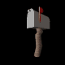
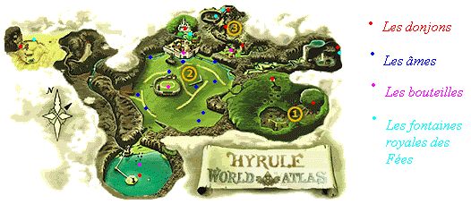

Solution
2ème partie
Voilà!!!
Elle est finie!!!

Envoyez-nous
toutes vos questions sur zelda 64
Merci
d'avance pour votre participation.
La Playzone,
LE site interactif où le joueur est roi!
Menu:
(là
où il n'y a rien, c'est que c'est terminé)
-
le
temple du feu
-
la
caverne de glace
-
le
temple de l'eau
-
le
fond du puits
-
le
temple de l'ombre
-
Gymnase
Gerudo
-
La
traversée du désert
-
Le
temple de l'esprit
-
Le
temple de l'esprit (suite)
-
Le
château de Ganon
-
Le
dernier duel
-
Quarts
de coeurs
-
Trous
à haricots
-
Fontaines
royales des fées
-
Bouteilles
-
Avoir
l'épée de Biggoron
-
Armes
et upgrades
-
Quête
des masques
-
La
vallée Gerudo
-
Secrets,
trucs
-
Carte
d'Hyrule
-
Les
pierres à potins
-
Les
Skulltulas d'or
Le temple
du feu:
1)Une
fois entré, avancez, montez les escaliers et tournez à gauche,
vous verrez Darunia. Sautez sur les blocs à votre gauche, et actionnez
l'interrrupteur pour libérer le goron. Récupérez la
petite
clé qui est dans la cellule. Sur les blocs situés
à l'opposé, qui ne sont accessibles qu'en utilisant le grappin,
vous trouverez des vases contenants des fées, profitez-en et faîtes
le plein.
Revenez ensuite sur vos pas,
et allez ouvrir la porte fermée à clef. Vous voici dans une
grotte gigantesque remplie de lave, ne vous inquiétez pas: si vous
tombez dedans les dégats seront sans importance.
2)Dirigez-vous
à droite, vers le milieu de la grotte. Faîtes exploser le
mur avec une bombe et libérez le goron enprisonné en actionnant
l'interrupteur ( récupérez la petite
clef dans la cellule). Revenez dans la grotte
prenez la direction opposée( au milieu à gauche de la grotte).
Passez la porte et libérez un autre goron pour récupérer
une autre petite clef.
Sortez et devant la porte, jouez le chant du temps pour faire apparaître
un bloc, que vous escaladerez. Vous atteindrez ainsi une salle contenant
un pudding (monstre gluant) et une skulltula
d'or. Retournez dans la grotte et passez la
porte fermée en face de l'entrée.
3)Sautez
sur le grillage, escaladez-le en prenant garde aux saigneurs ardents. Poussez
le bloc à droite sur la flamme, puis sautez dessus pour atteindre
la salle du haut. Franchissez la porte fermée. Dans la nouvelle
salle, escaladez les blocs en tuant les feux visqueux, puis sautez pour
atteindre la plateforme en face. Poussez le bloc sur la marque au rez-de-chaussée,
grimpez sur le bloc, et utilisez le grillage pour aller tout en haut de
la salle. Placez-vous alors au bord de la plateforme juste au dessus de
l'interrupteur de cristal et utilisez le grappin pour l'activer. Foncez
alors tout en haut, escaladez le grillage pendant que le feu est éteint,
puis passez la porte en haut.
4)Vous
arrivez dans un gigantesque labyrinthe, des rochers essaieront de vous
écraser, en entrant dans la salle, vous êtes face à
l'est. Allez tout au sud, et vous trouverez un interrupteur qui ouvre une
cellule, et vous donne par la même occasion accès à
une petite clé.
Ensuite, dirigez vous vers le nord. Vous trouverez un passage menant à
une autre cellule et donc à une autre petite
clef. Lorsque vous serez devant l'entrée
de ce passage, allez à l'est et trouvez un mur, faîtes le
exploser, il cache une skulltula d'or.
Enfin, retournez devant l'entrée du passage et longez le mur ouest.
Vous arrivez devant la porte de sortie.
5)Vous
voilà dans une grotte. Faîtes très attention à
ne pas tomber, car sinon, vous vous retrouverez dans la grande grotte du
début et vous devrez alors tout remonter! Sortez votre arc et tirez
dans l'oeil qui se trouve en hauteur, puis passez la porte qui s'est ouverte.
Vous trouverez la carte du donjon,
puis passez la porte fermée. Vous êtes deans une salle piégée,
contenant des plateformes entourées de lave. Vous devez foncer de
plateforme en plateforme, en évitant les ennemis sur votre route
jusu'à arriver au fond, dépêchez-vous car un mur de
feu vous poursuit. Une fois au bout, passez la porte.
6)Vous
êtes maintenant en haut des murs du labyrinthe où vous étiez
tout à l'heure, jouez le chant des épouvantails, utilisez
le grappin pour arriver au niveau de l'épouvantail, puis sur la
cible en face pour atteindre une plateforme en hauteur. Vous arrivez dans
des couloirs, avancez et escaladez les grillages. Prenez la skulltula
d'or au passage. Continuez à
avancer et vous arriverez dans une salle avec un trou au milieu. Prenez
la skulltula d'or
qui traîne sur un des murs de la pièce. Le petit coffre entouré
de feu contient 200 rubis,
si vous en avez besoin, prenez-le. Ensuite, faîtes le chemin inverse
pour revenir sur les murs du labyrinthe. Sautez sur la plateforme en face
de vous, éliminez la limace et posez une bombe sur le sol craquelé.
Descendez dans le trou, allez délivrer le goron er prenez la petite
clef, remontez. Sautez ensuite sur le petit
muret pour atteindre la grande plateforme avec une limace. Butez-la et
ensuite, activez l'interrupteur se trouvant sur une plateforme voisisne.
Retournez alors sur le muret, continuez d'avancer pour aller sauver
le goron et récupérer une petite
clef. Revenez dans la salle piégée.
7)Vous
verrez dans le mur de droite une porte fermée à clef, passez-la.
Traversez un petit couloir et vous arriverez dans une grande salle, avec
une tour au milieu. Faîtes très attention: dans toute la salle,
il y a des piliers, pour avancer vous devrez toujours passer entre deux
piliers, le problème est que la plupart des piliers sont des pièges,
vous devrez trouver le bon chemin, en évitant tous les pièges
(rochers, ennemis). D'abord, longez le mur de droite pour trouver une porte
derrière laquelle se trouve la boussole.
Ensuite,allez jusqu'au fond , là où il y a une énorme
mur de feu, actionnez l'interrupteur et trouvez le bon chemin pour passer
le mur de feu tant qu'il est éteint. lancez une bombe sur la porte
qui est un piège, ensuite prenez la vraie porte.
8)Vous
serez face à un mini-boss. Utilisez d'abord votre grappin pour le
calmer et prenez le à revers lorsqu'il tourne pour le démolir
à coups d'épée. Une fois que vous l'aurez éliminé,
sautez sur la plateforme centrale. Passez la porte devant vous. Dans la
nouvelle salle, grimpez aux grillages, puis utilisez le grappin pour actionner
le cristal et éteindre le feu. Foncez et grimpez au grillage tant
que le feu est éteint pour atteindre une nouvelle salle.
9)Vous
voilà dans une grande salle, avec un immense trou au milieu, vous
devez suivre le chemin qui monte, actionnez l'interrupeur et foncez pour
atteindre le haut de la salle avant que le feu ne se rallume, ouvrez le
coffre pour récupérer le marteau
des titans.Retournez en bas du chemin, utilisez
le marteau sur la dalle pour faire apparaître un trou dans lequel
vous sauterez. Utilisez encore le marteau mais cette fois, sur la statue
que vous verrez pour faire surgir une porte de sortie.
10)Tuez
les 4 saigneurs ardents qui sont derrière la porte, puis, utilisez
le marteau sur la statue pour faire apparaître un chemin, prenez
une des caisses et posez la sur l'interrupteur au fond de la pièce.
Passez la porte, utilisez le marteau sur la dalle pour découvrir
un trou. Sautez dedans, utilisez le marteau sur l'interrupteur rouillé
pour débloquer la porte est de la tour, et jouez le chant du temps
pour faire apparaître un bloc. Allez sur la plateforpme en face pour
utiliser le marteau sur l'interrupteur, descendez délivrer le goron
et prendre la petite clef.
Remontez sur le bloc bleu et sortez dans la salle de la tour.
11)Sautez
sur la plateforme devant vous, utilisez le marteau sur la dalle pour faire
apparaître un trou, dans lequel vous plongerez. Vous serez dans la
salle où vous aviez vu darunia au début du donjon. Prenez
la porte vous menant à la première salle du donjon, et utilisez
le marteau sur la statue en bas à droite des escaliers. Eliminez
tous les monstres qui se trouvent derrière, avancez dans la salle
suivante. Eliminez le gros vers et prenez la skulltula
d'or. Allez dans la salle à l'ouest.
Vous devez y combattre un autre mini-boss identique au premier. Entrez
dans la salle qui s'est ouverte au sud, utilisez le marteau sur l'interrupteur
pour délivrer darunia et récupérer la clef
d'or. Retournez à la salle où
vous aviez vu darunia au début du donjon et entrez dans la salle
du boss.
Le boss:
Volcania. C'est un boss très simple à battre. Vous serez
face à pleins de trous, et volcania, le dragon de feu, sortira de
l'un d'eux, dès que vous le voyez, foncez-lui dessus et assomez
le avec un bon coup de marteau sur le crane, ensuite enfoncez lui votre
lame autant de fois que vous pourrez. Répétez l'opération
jusqu'à ce qu'il crève. Si vous le ratez lorsqu'il sort d'un
des trous, soit il vous foncera dessus en crachant du feu, soit il montera
au plafond et fera tomber pleins de rochers, dans les deux cas , courez
dans tous les sens en évitant tout, essayez de ne pas trop vous
approcher des trous, c'est très dangereux.
La
caverne de glace:
A)Pour entrer
dans la caverne:
Une
fois dans la plaine d'hyrule, dirigez-vous vers le fleuve zora. Remontez-le
et allez au domaine zora, il est entièrement gelé. Foncez
vers la fontaine zora, en empruntant le passage derrière le roi
zora(qui sera congelé si vous n'avez pas encore récupéré
l'épée de biggoron). Vous verrez flotter des icebergs à
la surface de l'eau, un peu partout, sautez d'un iceberg à un autre
pour atteindre l'entrée de la caverne de glace.
1)Avancez
doucement, car des stalactites tombent du plafond. Frayez-vous un passage
en détruisant les stalagmites bleues. Vous arriverez dans une première
salle avec quatre statues de glace. Détruisez les toutes et passez
la porte du fond. La salle suivante renferme d'énormes lames de
glace qui tournent au centre de la pièce. Vous devez collecter les
cinq rubis d'argent dans la salle pour débloquer un passage, il
y en a un derrière les stalagmites, et un autre en hauteur près
de la sortie. Vous trouverez aussi une skulltula
d'or en hauteur derrière les stalagmites.
Avancez
dans le couloir en éliminant les monstres. Vous arriverez dans une
grande salle avec des plateformes. Commencez à avancer en sautant
de plateforme en plateforme, et vous verrez une source de feu bleu. Utilisez
une bouteille vide pour en prendre un peu. Ce feu vous servira à
décongeler le roi zora et surtout à enlever toute la glace
rouge qui entoure certains coffres ou recouvre certains murs. Continuez
à avancer sur les plateformes, et décongelez le gros coffre
avec le feu bleu pour obtenir la carte du
donjon.
2)
Retournez dans la salle avec les lames de glace, en prenant au passage
du feu bleu, dès que vous y êtes revenu, allez vers le mur
de glace rouge à gauche, et utilisez le feu bleu pour le faire fondre,
prenez ce nouveau passage, vous arriverez dans une nouvelle salle, faîtes
toujours attention aux stalactites qui tombent. Eliminez les saigneurs
ardents qui traînent dans la salle, vous verrez dans cette salle
une source de feu bleu, et deux blocs de glace rouge, l'un contenant la
boussole,
l'autre un quart de coeur.
De plus, près du quart de coeur, une skulltula
d'or pend au plafond. Récupérez
tous ces trésors, prenez du feu bleu avant de retourner dans la
salle aux lames de glace. Traversez la salle pour aller en face, devant
un autre mur de glace rouge. Faîtes le fondre et empruntez le nouveau
passage qui s'ouvre à vous.
3)Avacez
pour arriver dans une salle dont le sol est recouvert de glace, faîtes
attention, car autour de la glace, c'est le vide: si vous tombez, vous
revenez au début de la salle. Eliminez rapidement les saigneurs
givrés, récupérez la skulltula
d'or sur un mur à gauche de l'entrée,
et examinez la salle: vous devez, ici encore, récupérer cinq
rubis d'argent dispersés dans la salle, mais certains d'entre eux
ne seront accessibles qu'en utilisant le bloc qui se trouve près
de l'entrée de la salle. Vous ne pourrez que poussr ce bloc, il
s'arrêtera seulement s'il rencontre un obstacle, si il tombe dans
le vide, il reviendra automatiquement à l'entrée de la pièce.
Prenez donc votre temps et ramassez les quatres rubis d'argent accessibles
facilement. Le cinquième est au fon d'un couloir en hauteur au nord
de la pièce, et vous aurez besoin de feu bleu pour l'obtenir. Si
les rubis rouges situés en hauteur vous intriguent, jouez le chant
du temps pour avoir un indice... Lorsque vous aurez pris les cinq rubis
d'argent, allez récupérer du feu bleu, puis poussez le bloce
de glace pour accéder au passage ouvert...
Vous
aurez à éliminer un mini-boss qui se trouve derrière,
c'est ultra simple, et vous gagnerez les bottes
de plomb.
Le
temple de l'eau:
1)Prenez
le couloir devant vous et flottez, remontez à la surface au bout
du couloir et avancez. Vous voici dans la salle principale, devant une
grande tour, au troisième niveau du donjon. Allez dans l'eau et
coulez pour atteindre le premier niveau. Trouvez la porte encadrée
de deux torches éteintes, et avancez dans le passage. Dans
la salle du fond vous verrez la princesse Ruto, qui se proposera de vous
aider. Flottez pour la suivre. Sortez de l'eau, elle aura disparu. Repérez
le symbole de la triforce sur un mur, et jouez la berceuse de zelda à
côté pour vider l'eau du donjon. Ensuite, avancez dans la
salle devant vous. Eliminez les 4 spikes pour obtenir la carte
du donjon.
2)Sortez
de la salle, et tombez dans le trou par lequel vous êtes venus en
flottant. Utilisez votre arc pour allumer les deux torches éteintes,
en tirant à travers la flamme de la torche allumée. Passez
la porte qui s'est débloquée. Eliminez les coquillos pour
obtenir une petite clé.
Sortez de la salle et dirigez vous vers la salle principale. Allez vers
le passage bloqué par un bloc mobile, poussez le. Coulez dans l'eau,
avancez dans le couloir et flottez de l'autre côté. Avancez
et actionnez l'interrupteur cristal. Sautez sur le jet d'eau qui apparaît,
et utilisez le comme plateforme pour atteindre l'autre côté
de la salle et passer la porte.
3)Avancez
et vous vous trouverez devant un bassin. Plongez-y, et atterrissez sur
la plateforme accessible sous l'eau. Utilisez le grappin pour activer l'interrupteur
cristal dans la bouche de la statue, et dépêchez vous de flotter
pour nager dans le passage qui s'est débloqué. Sortez de
l'eau dans la petite salle du bout, prenez la petite
clef. Actionnez l'interrupteur cristal, et
plongez dans l'eau pour en ressortir dans la salle précédente.
Rendez-vous maintenant dans la salle centrale en revenant sur vos pas.
Notez que dans la salle avec le jet d'eau, vous devrez utiliser le grappin
pour retraverser la salle, et le réutiliser pour sortir de l'eau
au bout du couloir.
4)Lorsque
vous revenez dans la salle principale, allez à droite et prenez
le premier passage que vous verrez. Utilisez une bombe sur la dalle félée,
et plongez dans l'eau. Avancez dans le couloir en faisant attention au
coquillos, et flottez de l'autre côté. Sortez de l'eau, actionnez
l'interrrupteur. Utilisez le grappin pour rejoindre le passage devant vous,
butez les deux araignées et faîtes une attaque tourbillonante
sur la grille au fond pour trouver une skulltula
d'or. Actionnez un interrupteur cristal, retournez
dans la salle principale et entrez dans la tour par la porte en face de
vous.
5)Utilisez
votre grappin pour atteindre la première plateforme en hauteur.
Jouez la berceuse de zelda au niveau du dessin de la triforce, puis plongez
et prenez le passage au fond de l'eau en prenant garde à ne pas
toucher les pics. Utilisez le grappin pour actionner l'interrupteur cristal
au bout du couloir, et éliminez tous les monstres qui sont apparus
à coups de grappin. Flottez dand le dernier passage qui s'est dégagé
au plafond, prenez la petite clef
qui se trouve dans n coffre en haut. Retournez dans la tour, sortez de
l'eau et passez la porte sur une plateforme.
6)Repérez
le passage avec deux jarres devant, entrez. Utilisez le grappin pour avancer.
Vous arriverez dans une salle avec un gros coffre dans un jet d'eau et
un interrrupteur cristal. Vous pouvez soit poser une bombe près
de l'interrupteur, soit l'activer à distance avec le grappin, pour
stopper le jet d'eau et récupérer la boussole.
Retournez dans la salle principale, coulez au fond de l'eau et allez dans
la salle où vous aviez rencontré Ruto (le passage à
l'est du premier étage). Flottez pour remonter, utilisez une bombe
pour détruire le mur, vous trouverez une petite
clé derrière. Retournez dans
la salle centrale, flottez tout en haut et dirigez-vous vers la porte fermée
à l'ouest.
7)Avancez,
faîtes attention aux araknons bleus qui risquent de tomber et placez-vous
sur le jet d'eau, ensuite, utilisez le grappin pour activer l'interrupteur,
et sortez du jet d'eau quand il est à son point culminant. Sortez
de la salle, et jouez la berceuse de zelda devant le symbole de la triforce.
Nagez pour aller dans le passage à l'est, et coulez au fond pour
progresser. Tirez le bloc mobile à son maximum, puis retournez à
la salle centrale pour ouvrir la porte fermée à l'ouest.
8)Vous
êtes maintenant dans une salle bien étrange. Commencez par
éliminer les deux saigneurs qui se trouvent près de l'entrée.
Ensuite, glissez vous pour atteindre une première plateforme, de
là, tombez sur la plateforme juste en dessous. Cette plateforme
va se déplacer de bas en haut. Devant vous, une série de
plateformes descendent tout doucement. Sur ces plateformes, vous remarquerez
des cibles pour le grappin. Vous devez tirer sur la cible d'une des plateformes
lorsque votre plateforme sera en bas, et ensuite rapidement tirer sur la
cible de la plateforme suivante, continuez à grimper de cette manière
jusqu'à la sortie de la salle.
9)Vous
voilà dans un endroit plus tranquille. Trois statues de têtes
de dragon sont éparpillées dans la salle, et un interrupteur
cristal permet de changer le niveau de l'eau. Les araknons bleus, vous
devrez les tuer progressivement. Commencez par actionner l'interrupteur
et utilisez le grappin sur la cible de la tête de dragon en face
de vous. Ensuite, actionnez l'interrupteur pour baisser les statues, et
allez au bout de la plateforme où vous êtes. Utilisez le grappin
sur la cible au mur pour changer de plateforme. Sautez sur la statue pour
la passer, et actionnez l'interrupteur cristal. Utilisez le grappin pour
rejoindre la troisième statue, et actionnez une dernière
fois l'interrupteur pour faire remonter les statues, et vous avec. Eliminez
les deux araknons bleus, le pudding et passez les pics en lancant votre
grappin sur la cible au plafond. Sortez de la salle.
10)Vous
voici dans un lieu byzarre. Pas de murs visibles et, surtout, pas de sortie
possible. Repérez la bande de terre avec un arbre. Après
avoir fait le tour de la salle, approchez vous de l'arbre. Vous vous retrouverez
face à un nouvel ennemi: votre ombre! Elle peut être difficile
à battre, car elle anticipe tous vos mouvements. Une bonne technique
consite à utiliser des noix mojos pour l'immobiliser et en profiter
pour la saigner. Si vous avez du mal, ou si vous n'avez plus de noix, voici
l'autre technique à utiliser: visz votre ennemi, et administrez
lui des attaques basses en avançant dans sa direction. Ces attaques
sont imparables, vous êtes obligé de gagner! Renoncez absolument
aux attaque spéciales (magies, attaques tourbillonnantes...) : elle
sont inutiles, votre ombre les évite toutes. Et ne tentez aucun
enchaînement, car votre adveraire les contrera et ripostera. Une
fois votre ombre vaincue, la pièce deviendra normale et vous pourrez
prendre la porte de sortie.
11)Vous
trouverez dans la salle suivante le super
grappin. Jouez le chant du temps pour faire
apparaître un pasage dans le sol, et tombez dedans. Vous voilà
face à un fleuve au courant très puissant avec des tourbillons.
Vous devez plonger et nager en évitant de vous laisser happer dans
les tourbillons. Cela demande un peu d'adresse, vous devrez peut-être
refaire ce passage plusieures fois. Une astuce consiste à appuyer
sans arrêt sur le bouton B pour nager plus vite. Après le
deuxième tourbillon, chaussez vos bottes de plomb pour vous arrêter
et attraper une Skulltula d'or, puis
continuez à nager pour atteindre les plateformes au bout de la rivière.
De là, utilisez le super-grappin sur la cible au plafond, tirez
une flèche dans l'oeil interrupeteur, et récupérez
le petit coffre avec le super-grappin dans le passage qui s'est ouvert.
Prenez la petite clef
dans le coffre, puis avancez.
12)Vous
vous retrouvez dans des salles que vous aviez déja visitées.
Traversez-les pour retourner dans la salle principale. Remontez à
la surface de l'eau, et retournez quelques instants dans la salle à
l'ouest, là ou se trouvent les plateformes qui descendent. Eliminez
les deux saigneurs et utilisez le super-grappin pour récupérer
la skulltula d'or
sur le mur de droite. Retournez alors dans la salle principale. Coulez
au fond de l'eau, et dirigez vous à l'est, là où vous
aviez rencontré Ruto. Flottez jusqu'en haut, sortez de l'eau et
jouez la berceuse de zelda pour vider l'eau du donjon. Tombez dans le trou,
retournez dans la salle principale et entrez dans la tour. Grimpez sur
la première plateforme en utilisant le super-grappin, profitez-en
pour récupérer une Skulltula
d'or sur le mur en hauteur, et atteignez la
porte en face de vous avec le super-grappin. Sortez de la tour.
13)Restez
sur la plateforme entourant la tour, et allez au sud. Utilisez l'arc sur
l'oeil, et utilisez rapidement le super-grappin pour atteindre la cible
qui est apparue dans le passage que vous venez de dégager. Avancez,
poussez le bloc et allez à droite pour prendre une petite
clef, puis prenez l'autre passage. Utilisez
le super-grappin sur la cible en hauteur, et vous revoilà dans la
salle principale, au troisième niveau. Tombez pour retourner au
premier niveau, et dirigez vous vers la salle au nord.. Coulez pour passer
le couloir sous l'eau, remontez de l'autre côté. Utilisez
le super-grappin pour franchir les pics, et passez à la salle suivante.
14)Eliminez
les araknons bleus pour traverser cette salle tranquillement (prenez tout
de même garde aux courants, aux tourbillons et aux rochers !) et
entrer dans la nouvelle salle. Eliminez les petits mantas qui y traînent,
puis allez sur la plateforme au sud-est pour faire exploser le mur avec
une bombe. Fâites la même chose avec le mur sur la plateforme
sud-ouest. Entrez dans le passage dégagé, et poussez le bloc
à fond. ensuite, retournez sur la plateforme au sud-est, et prenez
le passage que vous aviez dégagé pour tirer le bloc à
fond. Retournez une dernière fois dans le passage au sud-ouest,
avancez et poussez le bloc à fond. Sa chute actionne un interrupteur
et le niveau de l'eau de la salle augmente. Empruntez le passage rendu
accessible.
15)Vous
verrez une interrupteur près de vous, un grand trou au fond duquel
jaillissent trois jets d'eau, et deux araknon bleus au loin. Commencez
par attaquer les araknon avec votree arc, ensuite, actionnez l'interrupteur
et foncez de l'autre côté en passant sur les jets d'eau, avancez
doucement, vous verrez des rochers passer devant vous. Sous l'endroit d'où
viennent les rochers, une Skulltula d'or vous
attend, récupérez la avec le super-grappin. Ensuite, attendez
qu'un rocher passe devant vous et foncez à l'endroit d'où
ils viennent. Vous coulerez dans un petit couloir.
16)Eliminez
le coquillos qui vous attend en bas, et flottez pour remonter à
la surface à l'autre bout du couloir. Passez la porte fermée,
vous aurez la clef d'or, ainsi
que deux fées dans les jarres. Replongez dans l'eau, flottez pour
remonter sous les rochers (vérifiez que la voie est libre avant
de remonter), et avancez. Vous revoilà dans la salle avec les tourbillons,
les courants, les rochers... Remontez rapidement sur la plateforme la plus
proche, et retournez dans la salle principale. Entrez dans la tour, grimpez
sur la première platefrome et jouez la berceuse de zelda devant
le symbole de la triforce, sortez de la tour par la porte en face. Prenez
le passage à l'ouest dans la salle principale, et jouez la berceuse
de zelda pour amener l'eau à son plus haut niveau. Allez enfin vers
la porte au nord de la salle centrale (pour l'atteindre, utilisez le super-grappin
sur la cible). Si vous en avez besoin, les deux jarres devant la porte
contiennent des fées. Passez la porte piégée et entrez
dans l'antre de morpha...
Le boss:
Morpha est, à mon avis, le boss le plus simple à battre.
Pour le faire venir , sautez sur la plateforme en face de vous. Ce monstre
a le pouvoir de contrôler l'eau et il en profite au maximum. Utilisez
le sper-grappin sur morpha en la visant avec Z pour l'attirer vers vous
et puis, frappez-la à coups d'épée. Recommencez l'opération
jusqu'à sa fin. Evitez à tout prix de tomber dans l'eau ou
de vous faire attraper par l'une de ses tentacules. Sérieusement,
il m'a fallu deux minutes pour en venir à bout! Une fois vaincu,
l'eau du lac est revenue.
Le
fond du puits:
1)Lorsque
vous êtes au fond du puits, avancez doucement. Eliminez la skulltula,
puis traversez le faux mur devant vous. Vous voilà dans l'entrée
du donjon. Vous devez ensuite suivre l'eau en allant à droite (attention
aux skulltulas et aux tetdoss vertes). Surtout, restez bien dans l'eau.
Vous apercevrez un symbole de la triforce devant une fontaine: jouez la
berceuse de zelda, et l'eau sera évacuée du donjon. Revenez
ensuite sur vos pas, enfaisant toujours attention aux tetdoss vertes. Descendez
dans le bassin vide, passez par le trou dans le mur, et éliminez
le poignant. Vous obtiendrez le monocle de
vérité. Revenez à l'entrée
du donjon. Vous pouvez maintenant soit sortir du donjon, soit y rester
et le fouiller complètement pour obtenir les skulltulas d'or qu'il
renferme.
2)Maintenant
que vous êtes en possession du monocle de vérité, nous
considérons qu'il est toujours activé. Si vous n'avez pas
la carte, tombez dans l'un des innombrables trous du donjon, vous aboutissez
dans une salle avec un effroi, tuez-le, et vous trouverez ensuite la
carte dans l'un des culs de sacs, ramassez
les 5 rubis et sortez de cette salle. Passez un faux mur, et vous vous
retrouverez à l'ouest de l'entrée du donjon, et examinez
les murs des couloirs pour découvrir deux petits coffres (oubliez
les autres salles pour l'instat) : ils renferment chacuns une petite
clef.
3)Allez
maintenant à l'ouest du donjon. Passez la grille et avancez, vous
arriverez dans une crypte avec six tombes. Eliminez les saigneurs, les
gibdos et allumez les torches pour ouvrir les tombes fermées. Ensuite,
examinez les tombes pour trouver une petite
clef. (attention, certaines tombes cachent
des monstres) Sortez de la salle, et allez au sud en longeant le mur en
face de vous. Vous trouverez un passage menant à un coffre renfermant
la boussole.
Revenez sur vos pas, et cette fois ci, allez dans le couloir à l'ouest
du donjon.
4)Dans
le couloir est du donjon, examinez le mur ouest pour trouver un passage
qui vous mènera dans la pièce centrale du donjon. Faîtes
attention au clapoir qui rôde, et évitez de tomber dans le
trou du plancher. Dans cette pièce, vous verrez deux portes fermées,
traversez-les pour trouver deux skulltula
d'or (une dans chaque salle)(vous devrez utiliser
le monocle de vérité dans une des pièces pour faire
apparaître un chemin). Puis, dirigez-vous au nord-est du donjon et
entrez dans le trou du mur. Passez la porte fermée pour arriver
dans une salle avec une sentinelle et des saigneurs ardents. Eliminez-les,
utilisez ensuite le monocle de vérité pour vous déplacer,
et atteignez la skulltula d'or
gardée par un pudding dans la salle derrière la porte du
fond. Vous pouvez maintenant quitter le puits.
Le
temple de l'ombre:
A)Entrer
dans le temple:En atteignant les hauteurs, vous faîtes face au cimetière
du village cocorico. Tournez vous et engagez-vous dans la grotte, vous
verrez de nombreuses torches éteintes. Placez vous au centre de
la pièce et utilisez le feu de din. Ca allume toutes les torches
et ça vous ouvre la porte pour entrer dans le temple de l'ombre.
1)Avancez
jusqu'au grand trou, utilisez le grappin pour le traverser, puis utilisez
le monocle de vérité. Vous arrivez à l'entrée
du temple. Une grande statue est entourée de colonnes. Avec le monocle,
vous ne verrez qu'un seul crane sur une colonne. Poussez alors la statue
pour qu'elle soit face à cette colonne, ce qui ouvrira la grille
au loin. Maintenant, examinez les murs de cette pièce avec le monocle,
et vous verrez un passage: empruntez-le, et allez à droite. Traversez
un faux mur pour atteindre une petite salle. En éliminant tous les
monstres qui rôdent, vous obtiendrez la carte
du donjon.
2)Sortez
de la salle et allez à droite, vous verrez un autre faux mur, traversez-le,
vous arrivez alors dans une salle avec unpoignant, éliminez-le,
et vous ibtiendrez les bottes des airs.
Retournez ensuite à l'entrée du temple, et avancez dans le
passage. Vous arrivez devant une sentinelle: explosez-la. Ensuite, allez
au sud en traversant le faux mur. Vous devrez éliminer deux gibdos
pour obtenir la boussole
3)Sortez
de la salle et allez en face, au nord en traversant un faux mur. Dans cette
nouvelle salle, un piège infernal vous attend: de gigantesques lames
tournoient, vous infligeant de nombreux dégats à chaque passage.
Pour les éviter, baissez-vous en appuyant sur le bouton R. Vous
devez récupérer 5 rubis d'argent dans cette pièce
pour obtenir une petite clef.
L'usage du grappin s'avère nécessaire. Notez que dans cette
salle existe un raccourci que vous pourrez utiliser lorsque vous serez
au niveau de la salle décrite plus loin, en 15. Retournez dans la
salle de la sentinelle, et explosez le mur est avec une bombe, puis avancez.
4)Une
fois passé la porte fermée à clef, vous vous engageez
dans de longs couloirs qui descendent. Avancez prudemment car non seulement
des skulltula se mettront sur votre route, mais pas mal de pièges
sont sur votre chemin comme par exemple les guillotines qui n'attendent
que vous pour se rendre utiles...
Avancez
lorsque le couperet est baissé pour éviter de perdre la tête.
Vous pourrez ainsi rejoindre la gigantesque salle sans trop de casse.
5)Tout
d'abord, faîtes attention au clapoir qui rôde. Devant vous
s'étend une longue série de plateformes parsemées
de guillotines. Allez de l'avant mais ne perdez pas la tête! Vous
aboutirez à une grande plateforme où un stalfos se fera une
joie de vous acceuillir, mais vous refuserez son invitation et vous l'occirez!
;-)
Une
fois le golmon éliminé, chaussez votre monocle de vérité
et regardez vers l'est. Une autre série de plateformes, invisibles
à l'oeil nu, apparaît. Traversez-la, et passez la porte au
bout du chemin.
6)Une
fois dans la nouvelle salle, ne bougez plus, et utilisez le monocle de
vérité. Vous pourrez admirer le pièges aux lames invisible.
Eliminez tous les ennemis qui se balladent dans la salle pour débloquer
une porte. Si les coeurs qui flottent en l'air vous intriguent, utilisez
votre ocarina pour jouer le chant du temps. Prenez le passage que vous
avez ouvert, et vous pourrez récupérer une skulltula
d'or. Notez qu'un coffre invisible sous la
skulltula contien des flèches.
7)Revenez
dans la grotte, sur la plateforme où se trouve le stalfos, après
l'avoir buté une nouvelle fois, regardez à l'ouest et vous
verrez une plateforme qui monte et qui descend, chaussez vos bottes des
airs, et avancez lorsque la plateforme est au plus bas pour atterrir dessus.
Ensuite, avancez toujours à l'ouest lorsque la plateforme est à
son point culminant (le plus haut ;), Vous devrez, à cause de l'inertie
des bottes, commencer à avancer lorsque la plateforme sera à
mi-chemin.
8)Vous
voilà sur une plateforme avec une sentinelle, des pièges
épineux qui touroient, et cinq rubis d'argent à récupérer.
Enlevez les bottes des airs et commencez la récolte, l'un d'eux
se trouve sous la sentinelle, puis prenez la porte qui s'est ouverte. Vous
arriverez dans une salle avec un piège épineux et des blocs
pointus qui essaieront de vous écraser. Utilisez le monocle de vérité
pour découvrir un bloc de pièrre caché dans un mur.
9)Vous
devrez sortir le bloc de pièrre de sa cavité, puis le pousser
sous les blocs pointus, vous pourrez alors récupérer la skulltula
d'or au fond de la salle dans la cellule sud.
Ensuite, allez de l'autre côté du bloc et tirez-le au maximum.Vous
n'avez plus qu'à grimper dessus, et sauter sur la plateforme à
côté de vous. Utilisez les bottes des airs pour atteindre
la plateforme en face de vous, puis prenez appui sur les blocs pointus
pour atteindre l'autre côté de la salle. Actionnez l'interrupteur,
récupérez le contenu des deux coffres, une petite
clé à récupérer,
et revenez sur vos pas pour sortir de la salle.
10)Faîtes
attention aux pièges épineux et à la sentinelle, et
passez le petit pont au nord-est de la plateforme. Utilisez le monocle
pour découvrir de nouvelles plateformes et ainsi continuer votre
chemin pour atteindre la porte du fon. Dans cette nouvelle salle, utilisez
le monocle de vérité tout le temps, Vous verrez en vrac deux
effrois, des rubis d'argent, des pisc au sol, mais surtout des cibles pour
le grappin. Commencez par éliminer les effrois, ensuite faîtes
le ramassage de rubis pour débloquer une porte à l'ouest.
11)Derrière
cette porte, vous verrez quelques saigneurs ardents, mais surtout un crane
monumental. Commencez par escalader les escaliers qui l'entourent, et jetez
les choux pêteurs qui s'y trouvent. Si vous vises juste, le crane
explose et libère une petite clef,
profitez-en pour récupérer la skulltula
d'or cachée derrière le crane.
Enfin, éliminez les saigneurs pour débloquer la sortie. Utilisez
à nouveau votre grappin et le monocle pour atteindre la porte de
sortie au nord.
12)Vous
arriverez dans des couloirs renfermant des pièges épineux
et une skulltula, mais aussi d'immenses ventilos qui soufflent avec une
force incroyable! Si vous voulez avancer sans encombres, chaussez vos botes
de plomb. Vous ne pourrez plus courir, mais au moin vous avancerez. Au
bout des couloirs, vous serez obligé de chausser vos bottes des
airs pour traverser un trou, soyez rapide et précis, pour éviter
que le ventilateur ne vous repousse dans le vide une fois grimpé
sur la plateforme, remettez vite vos bottes de plomb pour ne pas ous faire
"souffler" par le ventilateur. Continuez d'avancer.
13)Chaussez
à nouveau vos bottes de plomb, et avancez, vous verrez une longue
salle, un pont formé de plateformes et des ventilos sur les côtés.
De plus, sur le mur du fond, un oeil vous balance des flammes. Commencez
par éliminer l'oeil avec une flèche(tirez lorsqu'il est ouvert),
puis avancez au bout du pont et franchissez la porte. Eliminez les deux
effrois (si vous jouez le chant du soleil, une fée vient vous guérir),
prenez les flèches dans le coffre invisible et sortez.
14)Avancez
un peu, de facon à être en face du premier ventilateur que
vous croiserez, regardez le mur à l'opposé, vous verrez un
passage dans le mur, foncez pour l'atteindre. Passez la porte et vous serez
une salle avec deux pièges épineux et deux gibdos, éliminez
ces derniers, puis repérez le tas de débris dans un coin
de la salle, faîtes le exploser avec une bombe, puis pillez le coffre
invisible qui était caché dessous. Il y a une petite
clef. Passez la porte fermée.
15)Dès
que vous entrez dans la nouvelle salle, allez à l'ouest, déplacez
le bloc de pièrre pour le mettre sous l'échelle à
l'est. Notez que le passage que vous venez de découvrir en déplacant
le bloc est un raccourci qui permet de traverser le donjon plus rapidement
( au cas où vous auriez besoin d'y revenir). Ce raccourci est accessible
depuis la salle décrite au numéro 3. Ensuite, escaladez le
bloc grimpez à l'échelle, et jouez le chant des épouvantails,
utilisez le grappin pour rejoindre pièrre en face, et prenez la
skulltula
d'or qui se trouve à côté,
ensuite, retournez en haut de l'échelle, et sautez sur le bâteau.
Placez-vous sur le symbole de la triforce, et jouez la berceuse de zelda.
16)Le
bâteau se met alors en mouvement, et deux stalfos vous servent d'équipage...
Avant de continuer, lisez bien ce qui suit: lorsque le bâteau sera
arrivé au bout de la rivière, il coulera en quelques instants.
Donc si les stalfos vous posent des problèmes, ne vous embêtez
pas avec, gardez toujours un oeil sur le côté sud du bâteau,
et dès que vous voyez la terre ferme, sautez! Ensuite, dirigez-vous
vers la porte située à l'ouest de la rive.
17)Vous
voilà dans une salle où tous les murs sont invisibles: utilisez
le monocle, deux grossesbaffes vous tendent une embuscade, évitez-les,
vous gagnerez du temps. Rendez vous dans la pièce au nord (attention
c'est un labyrinthe) Là, deux murs en bois couverts de piques se
rapprochent dangereusement de vous, n'ayez pas peur, utilisez le feu de
din pour détruire les murs, une fois celà fait, vous aurez
acès à la clef d'or.
Evitez les deux effrois qui traîntent dans la pièce.
18)Sortez
et allez dans la pièce au sud. Utilisez toujours le monocle pour
repérer un grossebaffe invisible qui, une fois éliminé,
vous permet de récupérer une petite
clef. Sortez et rendez-vous dans la pièce
à l'ouest. Vous y verrez trois cranes géants qui tournent.
Utilisez, ici encore, les choux pêteurs pour les éclater.
Une
skulltula
d'or vous attend, prenez-la! Ensuite, retournez
sur la berge, et regardez au sud. Il y a des choux pêteurs. Utilisez
votre arc pour les faire exploser et pour faire apparaître un pont
de fortune. Traversez-le.
19)Si
vous avez besoin d'énergie, placez-vous près du pilier cassé
et jouez l chant du temps pour récupérer le coeur de vie,
au dessus. Si vous en voulez plus, jouez le chant des épouvantails
lorsque vous êtes sur le pilier, utilisez le grappin pour rejoindre
pierre, et ramassez deux coeurs. Ensuite, revenez sur la rive sud, et passez
la porte fermée. Utilisez le monocle de vérité et
les bottes des airs pour atteindre la porte menant à l'antre du
boss.
Le boss:
Bongo Bongo, Vous vous retrouverez sur un tambour géant sur lequel
les mains gigantesques de Bongo Bongo battent la mesure, pour le vaincre,
il va d'abord falloir neutraliser ses deux mains. Vous verrez que l'une
des ses mains bouge moin que l'autre, c'est celle là que vous devrez
ataquer en premier lieu, utilisez le grappin pour la neutraliser. Ensuite,
tirez rapidement sur l'autre main qui fonce sur vous. Une fois ses deux
mains immobilisées, utilisez le monocle de vérité
pour voir sa sale gueule. Utilisez à nouveau le grappin ou l'arc
et vises le point faible du boss pour le faire tomber, assénez lui
alors quelques bons coups d'épée. Répétez l'opération
quelques fois pour en venir à bout.
Le
gymnase Gerudo:
1)Entrez
dans ce mini donjon quand vous aurez récupéré les
gantelets d'argent. Vous arrivez face à trois portes. Au dessus
de la porte d'où vous venez, un oeil interrupteur donne des flèches
si on l'active. Ensuite, prenez la porte de gauche. Il faut éliminer
les deux stalfos pour gagner une clé
d'argent. Passez la porte qui vient de s'ouvrir.
Vous voilà dans une salle avec trois couloirs. Vous devez récupérer
les 5 rubis d'argent en un temps limité, et en prenant garde aux
rochers et aux murs de feu. Vous devez aussi utiliser votre grappin pour
avancer. Vous aggnerez une petite clef,
et une porte se débloquera.
2)Dans
la nouvelle salle, vous trouverez deux lobos et deux lobos blancs. Tuez-les.
Utilisez alors votre monocle de vérité pour apercevoir un
tunnel en hauteur. Lancez votre grappin pour l'atteindre. Actionnez l'interrupteur,
puis revenez dans la salle aux lobos. Poussez le bloc qui bloque le passage
au fond, qui mène à une salle avec 3 pudding. Combattez-les,
et utilisez à nouveau le monocle de vérité pour découvrir
un coffre invisible dans un des trous. Prenez la petite
clé et retournez dans le tunnel de
la salle aux lobos.
3)En
sortant du tunnel, vous vous retrouvez sur une plateforme en hauteur. Allez
à droite et jouez le chant des épouvantails devant la porte.
Ensuite, laissez vous tomber et utilisez votre arc pour tirer dans les
yeux des 4 statues qui tournent au centre de la pièce. Récupérez
la petite clef,
et utilisez votre grappin pour rejoindre l'épouvantail. Passez la
porte sur la plateforme, prenez la petite
clef qui s'y trouve, et sortez de la pièce.
Tombez de la plateforme et prenez la porte de sortie.
4)Vous
voilà dans une salle avec des saigneurs ardents et des feux visqueux.
Tuez tous les monstres. Ensuite, sortez votre marteau et cassez la petite
statue près du mur. Celà découvre un interrupteur,
qui, une fois actionné, vous permet de récupérer une
petite
clé. Sortez de la pièce. Vous
êtes maintenant dans une salle avec de la lave et des piliers. Vous
devez récupérer 5 rubis d'argent. L'un d'entre eux est en
hauteur (utilisez le grappin), et celui qui est entouré de flammes
doit être récupéré en dernier. Chaussez vos
bottes des airs pour mener à bien cette périlleuse entreprise.
Passez ensuite la porte qui s'est ouverte.
5)Vous
verrez devant vous des blocs bleus dans le sol. Jouez le chant du temps
pour les faire disparaître. Ensuite, chaussez vos bottes de plomb
et la tunique de plomb puis plongez. Ici encore, 5 rubis d'argent à
récupérer. Occupez vous d'abord des coquillos, puis utilisez
votre grappin pour les ramasser. L'un d'entre eux collé au plafond
doit être récupéré en nageant sous l'eau. Une
petite
clef à prendre, sortez de cette pièce
et revenez dans la salle aux piliers.
6)Jouez
le chant du temps pour faire apparaître des blocs. Prenez la petite
clef, et progressez dans le passage. Prenez
le contenu des coffres et revenez dans la salle aux piliers. Maintenant,
passez la dernière porte. Vous trouverez deux dinolfos et une sentinelle
à éliminer, et vous aurez une
autre clé. Passez la porte qui s'est
ouverte. Vous êtes à l'entrée du gymnase.
7)Prenez
la porte en face de l'entrée. Passez la porte fermée à
gauche et examinez les murs en hauteur: vous apercevez un passage. Grimpez
sur le grillage pour y accéder et récupérer la dernière
petite
clef, vous n'avez plus qu'à ouvrir
toutes les portes fermées de la salle, et atteindre le coffre contenant
la flèche de glace.
La
traversée du désert:
Voici le
chemin à suivre pour accéder au temple de l'esprit:
Une fois
les ouvriers de la forteresse Gerudo libérés, vous avez enfin
accès au désert hanté, allez-y! Vous êtes maintenant
devant le désert hanté, il vous faudra le franchir si vous
voulez accéder au temple de l'esprit. La traversée s'effectue
en deux étapes. D'abrod vous devrez suivre les poteaux ornés
d'un drapaux rouge. Vous verrez toujours deux poteaux, et il vous faudra
à chaque fois passer entre les deux. Si vous vous perdez, ou si
vous suivez un mauvais chemin. Vous serez systématiquement renvoyé
à l'entrée du désert. Ensuite, vous arriverez devant
une maison. Grimpez su son toit et utilisez le monocle de vérité
pour aperçevoir un fantôme, celui-ci vous guidera jusqu'au
colosse du désert. Il vous faudra suivre le trajet qu'il vous indique,
et éviter les monstres qui infestent les parages...
Vous
voilà devant le colosse du désert. Cette immense statue abrite
le temple de l'esprit. Avancez jusqu'à elle, et pénétrez
dans le temple. Malheureusement, la seule issue visible est un trou dans
le mur gauche de la salle, que vous ne pouvez emprunter qu'en étant
petit. Sortez du temple, et Sheik viendra vous voir. Il vous apprendra
le requiem des esprits pour revenir au temple de l'esprit...
Le
temple de l'esprit:
Pour la
première partie du temple, redevenez enfant, et utilisez le requiem
des esprits.
1)Vous
voilà enfant dans le temple de l'esprit. Montez l'escalier devant
vous et allez à gauche. Vous y verrez Nabooru, la gerudo solitaire.
Discutez avec elle, et choisisse la troisième option. Elle vous
demandera d'aller chercher les gantelets d'argent et de les lui rapporter.
Acceptez et entrez dans le trou. Vous voilà dans une salle avec
des saigneurs ardents, des pièges épineux et un armos. Eliminez
tous les montres, et franchissez la porte qui se débloque. Dans
la nouvelle pièce, écrasez les stalfos qui vous attaquent
et occupez-vous du tetdoss vert qui se balade au dessus d'un trou. Sortez
ensuite votre boomerang et visez l'interrupteur cristal qui se trouve derrière
la grille pour faire apparaître un pont. Empruntez-le pour sortir
de la pièce.
2)Vous
êtes dans une pièce bien étrange: sur une étroite
plateforme, flottant près d'un piège épineux, un anubis
vous fait face. Anubis à la curieuse habitude d'aller dans la même
direction que vous: si vous avancez, il avance! Commencez par détruire
toutes les jarres pour dégager le chemin, puis allez poser une bombe
près de l'interrrupteur cristal à droite de la pièce,
et dirigez-vous rapidement à l'opposé. Lorsque l'interrupteur
se déclenche, des flammes jaillissent. Anubis suivant le chemin
inverse du votre, se retrouvera en plein feu lorsque vous serez à
l'opposé. Il sera donc réduit en poussière. Dirigez-vous
alors vers la porte qui s'est débloquée. Entrez.
3)Devant
vous se trouve un grillage. Vous devez éliminer d'abord un saigneur
ardent qui volette dans le coin et faire attention au clapoir qui rôde,
et qui ne va pas tarder à vous tomber dessus. Ramassez cinq rubis
d'argent pour ouvrir un passage dans le grillage, mais faîtes attention
aux autres saigneurs ardents qui arrivent sur vous! Vous pourrez alors
prendre la skulltula d'or
qui vous attend sur le grillage. Allumez ensuite les deux torches éteintes
pour récupérer une petite clef,
et sortez par la nouvelle issue. Un mur à escalader où traînent
des skullwalltulas se trouve à proximité. Eliminez les bestioles,
grimpez le long du mur et prenez la Skulltula
d'or qui se trouve derrière vous.
4)En
haut, deux lizalfos viennent vous acceuillir. Après vous en être
occupé, vous remarquerez, dans un coin de la pièce, un interrupteur
cristal qui, une fois allumé, fera apparaître des coffres.
Prenez leur contenu. Vous avez sûrement remarqué, au centre
de la pièce, une dalle sur laquelle est représenté
le soleil. En regardant attentivement sur le mur de roc à proximité,
vous constaterez qu'un des rochers laisse filtrer la lumière. Vous
pouvez le briser à coups de missiles. La dalle s'illumine, et la
porte s'ouvre. Passez alors à la salle suivante.
5)Poussez
la statue à côté de laquelle vous vous trouvez pour
la faire tomber et actionner un interrupteur. Jetez-vous à sa suite
et approchez-vous des deux torches éteintes. Allumez-les pour faire
apparaître le coffre contenant la carte
du donjon (si vous n'avez plus de magie, une
torche allumée se trouve en haut des escaliers). Prenez-la, escaladez
le mur près de la statue que vous avez poussée et grimpez
les escaliers. Passez la porte qui se trouve en haut, et traversez le petit
couloir.
6)Vous
vous trouvez à présent dans une grande salle avec des pièges
épineux et des sentinelles. Commencez par éliminer ces dernières.
Ensuite, repérez les blocs de pierre, sur l'un d'entre eux est dessiné
un soleil. Vous devez le déplacer pour le mettre sous la lumière.
Ramassez ensuite les cinq rubis d'argent qui se trouvent dans la salle,
et une torche s'allumera. Enfin, vous devez allumer les trois torches éteintes,
et un coffre apparaîtra, il contient une petite
clef. Prenez-la, et passez à la salle
suivante. C'est un petit couloir dans lequel se trouve une skulltula
d'or, au dessus de la porte par laquelle vous
arrivez. Prenez-la et passez la porte.
7)Vous
arrivez dans une grande salle avec des colonnes. Au fond du trône,
une statue de metal. C'est un mini-boss, répondant au doux nom de
Hache-viande. Frappez-le pour le réveiller. Sa particularité
est de posséder une hache gigantesque avec beaucoup d'allonge et
qui fait très très mal. Pour le neutraliser, vous devrez
effectuer des attaques en sautant, puis vous replier rapidement avant de
vous faire hacher menu. Vous pouvez aussi le frapper dans le dos, mais
vous vous exposez alors à ses coups circulaires particulièrements
dangereux. Si vous avez besoin de vie, faîtes en sorte que le Hache-viande
se cogne à un colonne. Il la détruira et trois coeurs de
vie en sortiront.
Votre
adversaire éliminé, un passage apparaît. Engouffrez-vous
dedans...
Vous
vous retrouvez sur les hauteurs du colosse du désert. Le grand hibou
vous donnera quelques conseils, puis s'envolera. Avancez pour récupérer
les gantelets d'argent qui
attendent dans un gros coffre. Vous verrez alors Nabooru se faire attaquer
par deux sorcières puis disparaître...
Vous
pouvez maintenant redevenir adulte, et vous rendre au temple de l'esprit
pour la suite...
Le
temple de l'esprit, la suite :
1)Vous
retournez dans l'entrée du temple. Montez les escaliers, et cette
fois-ci, allez à droite. Poussez le gros bloc, et entrez dans la
salle. Vous apercevrez une sentinelle et un piège épineux.
Utilisez le grappin pour activer l'interrupteur cristal au dessus de la
sentinelle, et passez la porte au nord ouest. Un lobo vous souhaitera la
bienvenue. Vous remarquerez au sol, le sybole de la triforce. Placez-vous
dessus et jouez la berceuse de zelda pour faire apparaître un gros
coffre. Utilisez le grappin pour le rejoindre, et prenez la
boussole. Ensuite, revenez dans la salle précédente.
2)Allez
cette fois-ci dans la pièce au nord-est. Vous verrez des rochers
se ballader dans la pièce. Vous remarquerez aussi cinq rubis d'argent.
Il vous faudra les collecter. Pour récupérer le premier rubis
devant vous, utilisez les bottes des airs. Enfin, une skulltula
d'or vous attent derrière le bloc bleu,
que vous ferez disparaître en jouant le chant du temps. Passez alors
la porte qui se débloque, et récupérez une petite
clef en faisant attention au pudding. Revenez
à présent dans la salle de la sentinelle, et ouvrez la porte
fermée à clef.
3)Avancez
en prenant garde au pudding qui arrive. Escaladez le mur, puis sortez le
monocle de vérité. Avancez en srutant attentivement les alentours,
et vous verrez un grossebaffe invisible. Détruisez-le toutes affaires
cessantes. Esuite seulement, examinez la salle dans laquelle vous vous
trouvez. Un miroir au centre reflète la lumière du jour,
et les murs sont ornés de dessins de soleil. Vous devez faire tourner
le miroir en le poussant, et illumer tout à tout, les dessins du
soleil. Arrêtez-vous quand vous aurez illuminé les trois premiers
dessins du soleil(dans le sens des aiguilles d'une montre). Car le quatrième
fera apparaître un nouveau grossebaffe invisible. Prenez le contenu
du premier coffre apparu(le second est piégé), et empruntez
le passage qui s'est libéré.
4)Vous
êtes dans la salle où vous aviez récupéré
la carte en étant gosse. Tombez à droite en évitant
la statue, c'est un Armos. Montez les escaliers devant vous, et approchez-vous
de la torche. Utilisez le grappin pour atteindre le coffre face à
vous, et actionnez l'interrupteur à coup de marteau. Ensuite, sautez
pour atterrir sur la main gauche de la statue, là où se trouve
un dessin de la triforce, jouez la berceuse de zelda, et un coffre apparaîtra
dans la main droite de la statue. Tombez et passez par la porte qui s'est
ouverte. Poussez le bloc, et actionnez l'interrupteur au bout du couloir
à l'aide du marteau. Celà crée un raccourci vers l'entrée.
A présent, revenez sur vos pas et escaladez le mur au sud-ouest,
puis montez les escaliers. Une fois en haut, interprétez le chant
des épouvantails. Utilisez le grappin pour rejoindre pierre, et
prenez la skulltula d'or
qui se trouve à proximité. Sautez alors pour atteindre la
main droite de la statue, et vous saisir de la petite
clef cachée dans le coffre. Laissez-vous
tomber au sol, et dirigez-vous maintenant au sud-est de la salle. Utilisez
le grappin sur la cible au dessus de l'Armos, et montez les escaliers.
Passez la porte fermée à clef.
5)Traversez
rapidement le couloir car une sentinelle vous y attend, vous accédez
ensuite à une grande salle avec une sentinelle et trois anubis.
Utilisez soit le feu de din, soit des flèches de feu pour éliminer
le trio, puis occupez vous de la sentinelle. Une porte se débloque
après le combat. Derrière cette dernière, quatre amos
entourent un interrupteur. Vous devez réveiller les Armos, et faire
en sorte que l'un d'entre eux actionne l'interrupteur. Ceci ouvrira une
porte qu'il faut vite passer. Grimpez le petit couloir. Si vous avez besoin
de vie, deux coffres invisibles se trouvent près des murs(utilisez
le monocle). Passez ensuite à la salle suivante.
6)Nouveau
face à face avec le Hache-viande. Utilisez la même technique
que lorsque vous éiez petit pour en venir à bout. N'oubliez
pas qu'il peut casser les piliers et ainsi vous donner de la vie. Une fois
vaincu, glissez vous dans le passage derrière son trône, et
ouvrez le gros coffre pour récupérer le
bouclier miroir. Retournez alors sur vos pas
jusqu'à la salle aux quatre armos. Placez-vous sous le rayon du
soleil, et utilisez le bouclier pour refléter la lumière
sur le dessin du soleil au mur(utilisez le bouton R pour utiliser le bouclier).
Franchissez la porte qui s'est ouverte, et récupérez la petite
clef qui se trouve derrière.
Retournez ensuite dans la salle où vous aviez rencontré les
trois Anubis.
7)Vous
arrivez dans une salle où deux sentinelles vous attendent. Eliminez-les
tranquillement. Examinez la salle, et vous verrez que le mur nord est composé
de parties que vous pouvez escalader. Mais le mur est divisé en
plusieures strates, et chaque rangée bouge latéralement.
Vous remarquerez aussi que de chaque côté de ce mur qui bouge,
il y a des pics. Vous devez donc monter tout en haut, en évitant
de rester coincé sur un bloc de mur, auquel cas vous vous feriez
transpercer et vous n'auriez alors plus qu'à tout recommencer. De
plus, vous ne devez pas changer de niveau lorsque les murs bougent, sinon
vous tomberez. Celà demande juste un peu d'adresse. Avant de commencer,
éliminez la skulltula qui traîne en hauteur. UN CONSEIL: Pour
franchir ce mur à la con beaucoup plus facilement, sortez votre
super-grappin, et visez tout en haut du mur, de cette manière, vous
serez directement en haut sans vous casser la tête! Une fois le mur
franchi, éliminez les deux sentinelles en haut. Passez le piège
épineux pour changer de salle, la suite au numéro 8! ;-)
(je
commence à avoir des crampes à taper autant de textes moi!!!)
8)Au
sol, il y a un dessin de la triforce, sortez votre ocarina et jouez la
berceuse de zelda pour débloquer la porte, que vous emprunterez.
Eliminez tous les feux visqueux qui se trouvent dans la nouvelle salle.
Vous remarquerez alors que sur les murs sur les côtés, sont
disposées des portes piégées. Utilisez votre grappin
pour les faire bouger, et repérez celle qui cache un oeil interrupteur.
Détruisez-là et actionnez l'interrupteur. ensuite, utilisez
votre grappin pour atteindre la cible au plafond, et actionnez l'interrupteur
que vous verrez. Vous n'avez plus qu'à descendre pour prendre la
clé d'or, et sortir de la salle.
9)Prenez
la porte à l'ouest. Vous verrez un miroir géant à
votre droite, et un interrupteur cristal derrière des barreaux sur
votre gauche, mais un coup d'épée suffira pour l'activer.
Passez la porte qui se débloquera. Ensuite, éliminez le lizalfos,
ainsi que les trois tetdoss blancs. Vous pouvez alors utiliser votre bouclier
sur les rayons de lumière pour viser le dessin du soleil en hauteur,
ce qui vous donnera des bombes, puis tourner le miroir vers l'est. Explosez
alors le mur avec une bombe pour permettre aux rayons de lumière
de passer, et avancez dans le passage que vous avec dégagé.
Eliminez un lizalfos, et tournez le deuxième miroir vers le nord.
Retournez là où vous avez vu le miroir géant et allez
dessous. Utilisez le bouclier miroir pour dévier les rayons de lumière
sur le symbole du soleil, La platefrome sur laquelle vous vous touvez descendra.
Déviez maintenant les rayons de lumière pour qu'ils arrivent
sur le visage de la statue. Utilisez ensuite le grappin pour atteindre
la grille qui est apparue. Avancez et vous croiserez les sorcières.
Elle envoie un gros Hache-viande sur vous. Détruisez-le, et vous
trouverez Nabooru. Les sorcières l'enlèveront à nouveau,
puis prendront la fuite. Avancez en passant la porte au fond, traversez
un couloir et grimpez sur la grande plateforme devant vous.
LE BOSS:
Les
sorcières jumelles. Le combat contre les sorcières est extrèmement
simple. Il se déroule en deux parties, et c'est le bouclier miroir
qui fera tout. Tout d'abord, les deux sorcières vont tour à
tour vous envoyer une magie. Vous devez vous mettre en garde, et utiliser
le bouclier pour réfléchir l'attaque d'une des sorcières
sur sa soeur. Une fois qu'une des deux sorcières aura subi trois
attaques, elles fusionneront, pour ne plus faire qu'une seule super-sorcière.
Cette super-sorcière vous enverra tour à tour trois attaques
de feu, puis trois attaques de glace. Pour la vaincre, vous devez absorber
trois attaques du même type avec le bouclier, et celui-ci renverra
un super sort à la sorcière. La sorcière sera alors
K.O et vous pourrez lui foncer dessus pour lui asséner quelques
coups d'épée. Répétez l'opération jusqu'à
ce qu'elle crève, vous sauvez ainsi nabooru.
Après
celà, vous retournez au temple du temps où vous rencontrerez
sheik puis zelda. La peincesse vous racontera tout, vous donnera les flèches
de lumières puis se fera à nouveau enlever par Ganondorf
qui vous donnera rendez-vous dans le château d'hyrule. La fin est
proche!!!
Le
château de Ganon:
L'Antre
de Ganondorf:
Sortez
du temple du temps, t allez vers le château d'hyrule. Vou découvrirez
vite qu'il est devenu celui de Ganondorf. Dirigez-vous vers le pont cassé,
et Rauru vous parlera. Il vous dira que les six sages vont créer
une passerelle permettant d'atteindre le château. Traversez-la et
engouffrez-vos dans le repaire de la bête...
Progresser
dans le château:
Une fois
dans la tour, après avoir évité les attaques des deux
sentinelles, pénétrez dans la salle centrale. De là,
vous pourez accéder aux six autres branches du donjon. Chaque branche
correspond à un temple- La fôret, l'eau, l'ombre, le feu,
la lumière et l'esprit- et donc à un sage. Une fois que vous
aurez exploré une branche, vous devrez revenir dans la salle principale
et tirer une flèche de lumière dans le globe placé
à la base de chaque ramification. Notez aussi que vous utiliserez
beaucoup de magie, munissez-vous d'une potion verte, ou faites quelques
aller-retour pour remplir vos réserves.
La Forêt:
Franchissez
la porte et vous vous retrouverez dans une salle avec quatre torches éteintes.
Quand un lobo apparaîtra, éliminez-le. Ensuite utilisez le
feu de din pour allumer les torches, puis lancez une flèche de feu
sur la torche isolée au dessus de la deuxième porte. La deuxième
salle contient des piliers, des ventilateurs, une sentinelle et cinq rubis
d'argent. Commencez par aller à gauche et jouez le chant du temps
pour faire apparaître un bloc bleu. Prenez le rubis, puis à
l'aide des bottes des airs,atteignez la plateforme qui se trouve devant
vous. Jetez une bombe sur la sentinelle, et allez sur la plateforme avec
un interrupteur pour l'activer. Tournez-vous, utilisez le grappin pour
atteindre le pilier qui est apparu, et rcupérez un deuxième
rubis. Les trois derniers rubis s'obtiennent facilement, mais prenez garde
aux ventilateurs. Entrez ensuite dans la dernière pièce et
décocgez une flèche de lumière dans le globe.
L'Eau:
Passez
la porte et vous verrez une salle glacée. Devant vous, un feu bleu
est entouré de stalagmites. Commencez par éliminer les deux
mister freezzarts- ce qui débloque une porte dèrrière
un mur de glace rouge-, puis utilisez une bouteille pour prendre du feu
bleu de manière à faire fondre le mur de glace rouge. Reprenez
du feu bleu avant de passer à la salle suivante. Vous verrez deux
cubes de glaces. Pour simplifier les explications, condidérons que
le nord est devant vous. Allez derrière le cube le plus éloigné,
et poussez-le à l'est, puis au sud. Il devrait tomber dans le trou
et l'obstruer. Allez maintenant à l'ouest de l'autre bloc, et poussez-le
à l'est, puis au nord et enfin à l'ouest. Grimpez dessus
et faîtes fondre la glace rouge, puis actionnez l'interrupteur avec
le marteau, et atteingnez la sortie. Entrez alors dans la dernière
pièce et tirez une flèche de lumière dans le globe.
Et de deux! Maintenant, direction l'Ombre!
L'Ombre:
Passez
la porte et vous verrez une salle très vide, occupée par
un tetdoss vert. Allumez la torche sur la droite avec une flèche
de feu. Une fois la flamme ranimée, des plateformes de glace apparaissent,
mais pendant un temps limité. Foncez pour franchir ces obstacles
et arrêtez-vous sur la plateforme avec une dalle sombre. Utilisez
le monocle de vérité pour voir des chemins de glace invisibles.
Empruntez d'abord celui de gauche, menant à un interrupteur (actionnez-le
avec le marteau), et décochez une flèche de feu pour allumer
la torche près de la porte de sortir. Dirigez-vous à droite
de manière à descendre les blocs de glace et actionner un
autre interrupteur. Remontez, ouvrez le gros coffre apparu et prenez les
Gantelets
d'or. Entrez dans la dernière pièce
et tirez une flèche de lumière dans le globe. Et de trois!
Plu rien ne vous arrêtera!
Le Feu:
Vous
aurez besoin des gantelets d'or dans cette branche. Vous vous trouvez face
à une immense salle remplie de lave. D'étroites plateformes
flottent à la surface, et des tetdoss rouges volettent ça
et là. Vous devez ramasser les cinq rubis d'agent placés
dans la salle. Le hic c'est que si vous restez sur une plateforme, elle
s'enfonce dans la lave. Donc, quand vous entrez dans la salle, re vêtez
la tunique goron et les bottes des airs. Ainsi, les plateformes ne s'enfonceront
plus et récupérer les cinq rubis d'argent deviendra alors
un vrai jeu d'enfant. Atteignez la sortie à l'aide du grappin. Entrez
dans la dernière pièce et tirez une flèche de lumière
dans le globe. Bon, maintenant on va changer un peu, on pourrait dire:
"Et de quatre!" Mais moi je préfère:"Plus que deux!"
;-)
La Lumière:
L'entrée
est cachée par un bloc qu'il faut enlever à l'aide des gantelets
d'or. Quand vous entrez, utilisez le monocle de vérité pour
voir les monstres invisibles: éliminez-les et vous obtiendrez une
petite clef permettant de franchir la porte de sortie. Jouez la berceuse
de zelda sur le dessin de la triforce pour obteni une autre petite clef
et ouvrir la salle suivante, une salle circulaire avec deux rochers qui
tournent, et cinq rubis d'argent à récupérer. N'oubliez
pas le rubis en haut du muret central, accessible avec le grappin. Passez
dans la salle suivante. Utilisez le monocle de vérité pour
accéder à la dernière salle, et tirez une flèche
de lumière dans le globe. Attention, plus q'une branche!
L'Esprit:
Passez
la porte, vous êtes dans une salle avec des statues, une sentinelle,
des pièges épineux et cinq rubis à collecter. Commencez
par éliminer la sentinelle, puis utilisez le grappin sur la cible
au plafond pour récupérer les deux rubis d'argent au centre
de la pièce. Ramassez les trois derniers et passez dans la salle
suivante. Frappez l'interrupteur cristal à travers la grillez pour
récupérer des missiles. Lancez les dans le trou en haut de
la grille pour ouvrir la porte menant à la salle suivante, une salle
avec des dessis de soleil au plafond. Lancez une flèche de feu sur
la toile d'araignée au centre du plafond, puis utilisez le bouclier
miroir pour détruire le soleil qui ouvre la porte. Faîtes
attention car un clapoir traîne au plafond... Entrez alors dans la
dernière pièce et tirez une flèche de lumière
dans le globe. Votre dulcinée vous attend au sommet de la tour!
Il est l'heure de la sauver! Hyrule compte sur vous, vaincrez-vous le mal?
Gravir
la tour:
Voilà,
la fin est proche. Vous devez maintenant franchir le pon menant au centre
de la tour. Vous trouverez trois étages dans la tour, chaque étage
n'étant constitué que d'une seule pièce. Mais dans
chacunes de ces salles, vous devrez affronter un type de monstre précis.
Au premier étage, les saigneurs ardents vous attendent. Le deuxième
contient deux dinolfos. Le troisième étage renferme des stalfos
et la clef d'or.
Enfin, le dernier étage est gardé par deux hache-viande.
Ensuite, montez tout en haut de la tour pour accéder à la
chambre de Ganondorf...
Le
dernier duel:
EN CONSTRUCTION
Prélude
au combat:
Vous
verrez Ganondorf jouer de l'orgue, alors que zelda est enfermée
dans le cristal. Ganon sentant votre présence commencera à
vous parler de la triforce, dont il pense récupérer les différentes
parties très bientôt...
Après
quoi il vous attaque!
LE BOSS:
Ganondorf
L'arène:
Vous
commencerez par un combat au sommet de la tour. Ganondorf effectue une
attaque qui fait trembler la terre, et le sol s'effondre. Vous tombez alors
à l'intérieur de la tour, dans une salle que vous aviez déja
visitée. Au centre de la salle, il y a une platofrome au dessus
de laquelle Ganon vole. Une autre plateforme latérale, court le
long des murs de la pièce, c'est là que vous devez aller.
Si vous êtes tombé au pied des plateformes, escaladez le mur
de la plateforme centrale, et sautez vite sur la plateforme latérale.
Technique
de combat:
Au début
du combat, Ganondorf vous enverra des boules d'énergie, vous devez
donc les renvoyer à l'aide d'un habile coup d'épée.
Attention cependant, Ganon risque de vous la renvoyer à noueau,
donc soyez toujours vigilant. Parfois les échanges peuvent durer
plus d'une minute. Pour vous ensortir, lancez-lui une flèche de
lumière au moment où une boule d'énergie le touche.
Vous avez quelques secondes pour ajuste votre tir, après quoi il
faudra tout recommencer. Dès que la flèche atteint son bur,
Ganondorf tombe sur la plateforme centrale. Précipitez-vous sur
lui en évitant de tomber, et frappez-le jusqu'à ce qu'il
se relève. A ce moment là, réfugiez-vous sur la plateforme
centrale et attendez qu'il vous envoie des boules d'énergie. Répétez
l'opération jusqu'à ce que Ganon soit détruit. Ahhhhh
c'est fini....ben?!! Zut y faut s'enfuir!!! Tout va pêter! :-)
Quitter
les lieux:
Voilà,
Ganondorf est mort! Hélas, avant d'expirer, il a enclenché
le système de destruction de la tour. Vous devez suivre zelda et
sortir de la tour le plus rapidement possible. Durant tout votre course,
des rochers tomberont du ciel pour vous écraser, même si ils
ne font pas très mal, essayez des les éviter. C'est zelda
qui ouvrira les grilles vous permettant d'avancer, donc ne la perdez pas
de vue. Dans la salle où vous aviez récupéré
la clef d'or, zelda se fait emprisonner das un cercle de feu. Eliminez
les deux stalfos pour la sauver. Enfin, lorsque vous sortirez de la tour,
un effroi tentera de vous arrêter. Malgré celà, vous
devriez réussir à quitter les lieux. La tour s'effondrera
alors, marquant la fin du règne de Ganondorf. Mais comme d'habitude,
le gros méchant revient!
Résurrection:
C'est
alors que des décombres de la tour, un corps s'élève:
Celui de Ganon s'étant emparé de la triforce du pouvoir,
il se retrouve doté d'une force surhumaine, qui le rend invulnérable.
Sous vos yeux horifiés, il se transforme en ganon, monstre gigantesque
armé de deux épées. il commnce par créer un
mur de feu vous empêchant de fuir, puis il se jette sur vous et vous
frappe avec VIOLENCE. Sous le choc, vous perdrez l'épée de
légende qui ira se planter près de zelda.
LE BOSS:
Ganon (le retour) :
Technique
de combat:
Puisque
vous n'avez plus l'épée de légende, équipez
vous du marteau des titans ou de l'épée de Biggoron. Bien
que gigantesque, Ganon, n'est pas si difficile à battre. Son point
faible, sa queue, doit être frappé avec acharnement. Le seul
problème, c'est que Ganon tourne sur lui-même pour vous empêcher
de l'atteindre, et en profite pour vous frapper! Vous devez donc effectuer
une roulade pour passer entre ses jambes et éviter son attaque,
et une fois dans son dos, asséner un coup sur son appendice. Au
bout d'ue petite dizaine de coups, Ganon s'énerve sérieusement.
Vous pouvez alors récupérer l'épée de légende
et l'équiper. Mais ganon devient plus rapide. Vous devez sortir
votre arc et lui décocher une flèche de lumière en
pleine face. Celà l'abassourdit, et vous pouvez le frapper, ce qui
l'énèrve encore. Au bout de quelques coups d'épée,
Ganon s'évanoui pour de bon et zelda en profite pour lui envoyer
un sort qui le paralyse complètement. C'est le moment de lui administrer
le coup de grâce en le frappant à la tête avec l'épée
de légende. Voilàààààààà
c'est enfin terminé ouffff j'ai plus de mains moi!!!
La magnifique
fin de Zelda:
Et voilà,
la fabuleuse épopée de Link est finie. Enfin presque, car
il y a encore une chose à découvrir absolument: al magnifique
scène finale de Zelda: Ocarina of Time. Merci à vous d'avoir
lu cette soluce qui m'a pris beaucoup de temps!
Dernière
nouvelle, un magazine US a recu récemment le témoignage d'un
joueuse jurant d'avoir découvert la triforce! Prix ultime gagné
dans un temple caché: celui de la lumière, je reste cependant
sceptique à cette histoire, j'ai vu les photos, mais elles sont
toutes bidon.
Re-dernière
nouvelle: C'est officiel, c'était un fake(mnsonge) il n'y a rien
de vrai dans le témoignage de cette joueuse! Cependant, Nintendo
n'a jamais démenti la présence de la triforce dans zelda
64...
Affaire
à suivre donc. Si il y a de nouveaux éléments, ou
si je découvre la vérité, je vous dirai tout promis!
Emplacement
des quarts de coeurs:
1)Allez
au cimetière, entrez dans la tombe du fossoyeur et faîtes
moins de 1 minute au moins à sa course.
2)Allez
au cimetière, entrez dans la tombe du fossoyeur, finissez la course,
et en sortant, sautez de l'autre côté.
3)Parlez
au fossoyeur pour avoir 1/4 de coeur.
4)Allez
au cimetière : dans une des tombes vous trouverez un zombie, seul.
Tuez-le et jouez le chant du soleil.
5)Allez
à la vallée Gerudo étant petit, prenez la poule et
sautez dans la cascade.
6)Allez
à la valée Gerudo étant grand, montez juste au début
du pont et regardez sur votre gauche : Sautez sur la plate forme, attrapez
la caisse en face avec un grapin et bombez la.
7)Dans
la forteresse Gerudo, montez le plus haut possible sur le toit et visez
le coffre avec votre grappin.
8)Allez
entre les deux barrières menant au lac Hylia : votre pierre de souffrance
devrait vibrer. Posez une bombe et renvoyez sa boule avec votre bouclier.
Parlez-lui et il vous vendra pour 10 rubis le 1/4 de coeur.
9)Allez
sur la place du marché en et faîtes le bowling teigneux jusqu'à
ce que le prix soit 1/4 de coeur. Jouez et gagnez.
10)La
nuit, faîtes le jeu de la chasse au trésor de nuit avec le
monocle de vérité.
11)Toujours
la nuit au château d'hyrule, approchez vous du chien qui est au coin
du marchand d'armes, coeurs... avec le stand de marché jusqu'à
ce qu'il vous suive et rapportez le à sa maîtresse qui habite
dans une des maisons de la ruelle.
12)En
sortant du château d'hyrule, étant adulte avec les bottes
de plomb, marchez vers la droite jusqu'à ce que vous voyiez un arbre
marron tout seul. Bombez sa base, tombez dans le trou, mettez vos bottes.
13)Téléportez
vous grâce au boléro du feu au cratère du péril
étant petit, plantez un haricot non loin du point de téléportation,
revenez-y étant grand et montez sur le haricot.
14)Rentrez
dans le cratère du péril par le sommet du mont du péril,
à droite de la Fée du Feu de Din, avancez jusqu'au bord du
trou et laissrz vous dscendre : la paroi est praticable et il y a un coeur
vers le milieu bas.
15)Allez
au ranch Lon Lon étant petit, entrez dans la tout au fond, résolvez
l'énigme pourrie des caisses, entrez dans le trou du mur et chopez
le 1/4 de coeur.
16)Allez
à Cocorico (Kakarico comme disent nos amis les amerlocks) étant
grand, montez en haut de la tout de guet, prenez votre grapin et visez
le keum qui fait bronzette sur son toit. Une fois à côté
de lui, parlez lui et vous aurez le cadeau.
17)Tuez
50 Skultulas et allez parlez à la famille maudite.
18)Etant
petit, montez en haut du mont du Péril et parlez au hibou qui vous
descendra sur un toit de Cocorico. essayez de vous repérer. Marchez
vers l'enclos des poules : si vous êtes au-dessus, laissez vous tomber
sur la plate-forme et entrez dans le trou.
19)Etant
petit, le jour, allez au cimetière et regardez où le petit
tape sur le sol avec son bâton. Revenez la nuit et faîtes creuser
un trou à Igor pour 10 rubie : dans un des endroits, il y a 1/4
de coeur.
20)Etant
petit, allez aux bois perdus, entrez dans la première salle à
gauche, jouez le chant de Saria sur le rondin de bois au petit.
21)Entrez
dans la première salle à droite des bois perdus étant
petit, descendez l'échelle, montez sur le rondin de bois, sortez
votre ocarina et répétez les morceuax des gamins : ils vous
donneront le 1/4 de coeir.
22)Etant
petit plantez un haricot à l'entrée de la caverne Dodongo
et renvenez-y étant grand.
23)Etant
petit plantez un haricot au pied du laboratoire du lac Hylia. Revenez adulte
et grimpez sur le toit du labo.
24)Etant
petit plantez un haricot dnas le cimetière, à gauche de la
rangée de tombes la plus à gauche.
25)Etant
petit battez le record de pêche.
26)Etant
petit allumez toutes les torches du village des Gorons. Jetez das bombes
dans la jarre tournante jusqu'à avoir 1/4 de coeur.
27)Etant
petit allez voir les crapauds-qui-vous-sondent-du-fond-des-eaux et jouez
leur le chant des tempêtes.
28)Jouez
aux crapauds tous vos chants de la ligne du haut, puis aidez les à
attraper des papillons en jouant cette mélodie rapidement : A,CG,CD,CB,CG,CD,CB,A,CB,A,CB,CD,CG,A.
29,
30)Les deux autres qui sont sur le chemin
de Zora peuvent être pris avec le boomerang ou une poule.
31)Allumez
toutes les torches du Domaine Zora, un coffre contanant un quart de coeur
apparaîtra.
32)Une
fois que vous avez l'écaille d'or, allez toucher le fond dans le
bassin du laboratoire du lac Hylia. Parlez au gars.
33)Allez
en étant grand là où était le Jabu-Jabu : sur
un Iceberg y a 1/4 de coeur. Puis mettez vos bottes de plomb et votre tunique
bleue et cherchez au fond de l'eau.
34)Allez
dans la caverne polaire derrière le Jabu-Jabu et il y en a un quelque
part emprisonné par un feu rouge. (le délivrer avec la flemme
bleue trouvée dans cette même grotte)
35)Faîtes
plus de 1000 points à l'archeris montée.
36)Plantez
un haricot au colosse du désert en vous y téléportant
étant petit.
Emplacement
des trous à haricots:
*A l'entrée
de la caverne Dodongo.
*A droite
du magasin dans le village kokiri
*Au
Colosse du désert
*Près
de celui qui le svend
*A côté
du laboratoire du lac Hylia
*Dans
le cratère du péril (y aller avec la téléportation)
*Forêt
perdue : aller à droite, gauche, droite, gauche, gauche
*Forêt
perdue : prendre à gauche ) deux pièces de la première
*Dans
la vallée des Gérudos : sautez d'une plate forme à
droite du pont.
Fontaines
royales des fées:
1)L'attaque
tournante : Allez au sommet du Mont du Péril avec des bombes et
explosez le mur à gauche du panneau.
2)Le
Feu de Din : Allez au chateau d'Hyrule et suivez le chemin qui y mène
: lorsqu'il tourne vers la gauche, continuez tout droit jusqu'à
la roche à éclater à coups de bombes.
3)Le
Vent de Farore: Passez derrière le roi de Zora (en lui montrant
la lettre de sa fille, trouvée dans le lac Hylia), et voyez une
île derrière le Jabu-Jabu : explosez l'endroit prévu
à cet effet dans le mur.
4)L'Amour
de Naryu : Téléportez vous au colosse du désert (en
utlisant le requiem des esprits) et cherchez deux palmiers : posez une
bombe près de la fissure derrière eux.
5)La
double endurance : Vous devez posséder les gantelets d'Or trouvés
dans la partie de l'ombre du château de Ganon, et retourner à
l'emlpacement de la fée qui vous a appris le Feu de Din et soulever
le bloc.
6)La
double magie : Entrez dans le cratère du Péril par la salle
du trône de Darunia en poussant la statue au fond et prenez à
droite en cassant les pierres avec le marteau des Titans.
Emplacement
des bouteilles:
1)La
première : Allez au ranch Lon Lon et parlez à Talon.
Il vous proposera de faire le jeu des super-cocottes. Acceptez, gagnez
et voilà ! ça fait une!
2)La
deuxième: Allez fouiller au fond du lac hylia en étant enfant,
vous trouverez le message de la princesse zora dans une bouteille qui sera
désormais à vous!
3)La
troisième: Allez au village Cocorico et parlez à la gardienne
des poules. Il vous faut les lui retrouver. Il y en a une à l'entrée
du village, une dans la caisse près des escaliers qui montent vers
la sortie, une autre presque à la sortie (vers le garde à
qui il faut remettre la lettre de Zelda). Pour celle qui est derrière
la grille à l'entrée de la maison des skulltulas, soit vous
y allez avec une autre poule, soit vous la shootez au lance-pierre. Vous
en aurez sûrement remarqué une autre dans la partie cloturée
en dessous à gauche du moulin. Soit vous y allez avec une autre
poule en partant de la plate-forme à l'entrée du moulin,
soit vous montez sur le grand pillier, puis faites face au gars qui bronze,
appuyez sur Z et faites A+Gauche pour sauter sur son toit puis dans la
partie cloturée. Ensuite montez l'échelle pour une autre
poule. Enfin il en reste une près de l'enclos. Si vous recommencez
vous gagnez 20 rubis...
4)La
quatrième: Elle est à réserver aux bons archers et
aux chevronnés : vous connaissez le vendeur d'âmes dans la
première maison du château d'hyrule, là où il
y a plein de cruches. Si vous lui trouvez les dix Ames de la plaine d'Hyrule,
il vous la donne. Ce sont ces espèces de fantômes volants
qui disparaissent à votre approche. Le mieux est de les chasser
avec l'arc sur Epona. Il vous faut une bouteille vide pour les emprisonner.
Ils sont : à l'entrée de la ville, Devant le ranch Lon Lon,
à l'intersection séparant Gerudo d'Hylia, dans la forêt
située à gauche à la sortie du village Kokiri (il
y en a deux), à droite en sortant du chateau, longez la rivière
jusqu'à un arbre, longez aussi le mur de briques près du
ranch, suivez la rivière en sortant de Kokiri jusqu'à un
promontoire duquel vous voyez Zora et Kokorico, près d'une grosse
boule au sud de l'entrée de Kokiri, et enfin près d'un arbre
solitaire sur le chemin de Gerudo. En fait chaque fois que vous voyez un
grand arbre seul, il vous faut soit chasser un esprit, soit faire une roulade
dedans, soit poser une bombe dans le coin.
Avoir
l'épée de Biggoron:
Bien
qu'il soit plus simple de remplir les différentes missions qui vont
suivre lorsque vous aurez paaris tous les morceaux de musique, il est tout
de même possible d'obtenir l'épée de Biggoron dès
que vous serez adulte. Alors, suivez les différentes étapes
détaillées ci-dessous pour l'avoir. Et, après un long
parcours, vous obtiendrez, vous aussi, l'épée de Biggoron.
1)De
l'oeuf de poche à la cocotte de poche:
Commencez
par raffler l'oeuf de poche tout de suite. Allez au village cocorico, et
discutez avec la fille de la fermière qui avait perdu ses cocottes
lorsque vous étiez petit. Elle vous donnera l'oeuf de poche. Attendez
une journée (jouez le chant du soleil) et l'oeuf éclora pour
donner naissance à une cocotte de poche.
2)De
la cocotte de poche au p'tit poulet:
Vous
pouvez obtenir le p'tit poulet tout de suite, entrez dans la maison à
gauche de la place du village, vous y verrez talon, qui dort profondément:
utilisez la cocotte de poche pour le réveiller. Il retournera alors
au ranch en vous remerciant. Rapportez alors la cocotte de poche à
sa propriétaire, et elle vous confiera un volatile bleu, le p'tit
poulet.
3)Du
p'tit poulet au champignon suspect:
Pour
obtenir le champignon suspect, allez dans le bois perdu, lorsque vous entrez,
dirigez-vous à l'ouest et montrez le p'tit poulez au garçon
près du tronc d'arbre. Il vous donnera un champignon à remettre
à la sorcière du village cocorico(pour atteindre sa maison,
sortez par le fond de la boutique de l'apothicaire). Vous avez trois minutes
pour l'apporter à la sorcière.
4)Du
champignon suspect à la mixture suspecte:
Vous
pouvez obtenir la mixture suspecte tout de suite, mais il faut d'abord
que vous entriez dans le village cocorico pendant le jour pour rencontrer
la sorcière. Cette dernière sera ravie de sentir le champignon
suspect, et vous donnera une mixture suspecte à rapporter au garçon
dans le bois perdu.
5)De
la mixture suspecte à la scie du chasseur:
Vous
pouvez obtenir la scie du chasseur tout de suite, retournez dans le bois
perdu, où vous avez parlé avec le garçon, vous vous
paercevrez qu'il a disparu, et qu'une jeune fille du village cocorico l'a
remplacé, donnez-lui la mixture suspecte, et elle vous donnera en
échange la scie du chasseur.
6)De
la scie du chasseur à l'épée brisée de goron:
Vous
aurez besoin d'epona ou du super-grappin. Allez faire un tour du côté
de la vallée de gérudo située à l'ouest de
la plaine d'hyrule, montez sur epona et sautez par-dessus le pont brisé,
ou allez au bord et utilisez le super-grappin sur l'autre côté
pour traverser. Allez parler à l'homme devant la tente, montrez
lui la scie du chasseur, il vous remettre l'épée brisée
de goron.
7)De
l'épée brisée de goron à l'ordonnance:
Dirigez-vous
maintenant vers le sommet de la montagne du péril. Montez tout en
haut, utilisez le grappin ou l'arc des fées pour atteindre le sommet,
vous y verre Biggoron, un goron géant. Montrez-lui l'épée
brisée, il vous demandera alors de lui rapporter un médicament,
et vous donnera pour ça une ordonnance.
8)De
l'ordonnance au crapaud qui louche:
Pour
obtenir le crapaud qui louche, il faut que vous ayiez décongelé
le roi zora(avec du feu bleu). Allez voir le roi dans le domaine des zoras,
s'il est congelé, utilisez le feux bleu, parlez-lui et montrez-lui
l'ordonnance, et prenez le crapaud.
9)Du
crapaud qui louche aux super-gouttes:
Servez-vous
d'epona pour rapporter le crapaud qui louche dans les temps (3 minutes).
Allez dans le laboratoire du lac hylia, et montrez le crapaud au docteur,
il vous donnera les super-gouttes.
10)Des
super-gouttes au certificat:
Vous
devez disposer d'epona pour arriver dans les temps et du grappin ou de
l'arc des fées pour atteindre le sommet de la montagne. Foncez et
apportez les super-goutes à Biggoron en haut de la montagne du péril
(vous avez quatre minutes) Il vous donnera en échange des super-gouttes
un certificat.
Du certificat
à L'épée de Biggoron:
Voilà,
vous n'avez plus qu'à attendre trois ou quatre jours (jouez le chant
du soleil si vous êtes pressé), et montrer le certificat à
Biggoron pour que l'épée de Biggoron soit à vous.
Cette arme est deux fois plus puissant que l'épée de légende,
mais il faut l'utiliser à deux mains (vous ne pouvez donc plus vous
servir de votre bouclier en même temps) et vous devez être
adulte pour la porter.
Armes
et upgrades des armes:
L'épée
Kokiri : elle
se trouve derrière le camp d'entraînement (passer dans le
trou puis chercher derrière)du village kokiri.
L'épée
de légende: jouez
le chant du temps au temple du temps après avoir posé les
trois pierres ancestrales puis saisissez la.
L'épée
de géant ou de Biggoron: Soit
vous l'achetez pour 200 rubis au forgeron du village des Gorons et dans
ce cas elle se casse très vite, soit vous l'obtenez par Biggoron
(Au sommet du Péril regarder à droite pour lui parler) :
là, elle est incassable.
Les
bombes : ce sont
comme des choux-pêteurs portables. Pour porter les choux-pêteurs,
jouez l'air de Saria à Darunia. Les bombes se trouvent pour la première
fois dans la caverne Dodongo et seront très utiles pour le reste
de l'aventure. Première upgrade : Arrêtez le Goron qui roule
dans le village goron avec une bombe après avoir fini Dodongo. Deuxième
upgrade : un des prix (au hasard) attribué pour une victoire au
bowling teigneux.
Les
noix mojo : Elles immobilisent certains ennemis
comme les plantes carnivores. Première upgrade : Allez aux bois
perdus ainsi : doite, gauche, droite, gauche, devant, gauche. Bombez la
roche et payez les 40 rubis. Deuxième upgrade : bois perdus toujours
: droite, gauche; droite, gauche, gauche. Tombez dans le trou dans l'herbe
et mettez le monocle de vérité.
Les
graines mojos : ce sont les munitions du lance-pierres.
Première upgrade : Allez aux bois perdus et faites : droite. tirez
trois fois de suite dans le mille (100 doit s'afficher) sur la cible suspendue.
Deuxième upgrade : Gagnez au jeu d'adresse sur la place du marché.
Les
batons Mojo : Très
utiles à enflammer mais pas vraiment en tant qu'arme. Première
upgrade : aux bois perdus, aller vers la gauche puis entrez dans la salle
d'après celle ci. Marchez sur la rampe, butez le débile planqué
et achetez la. Deuxième upgrade : vous devez d'abord avoir vendu
les masques de mort aux enfants perdus dans la forêt. Tombez encore
dans le trou d'herbe comme pour les noix et mettez un masque de mort. Avancez
sans vous soucier des gamins et occuppez vous du cracheur de boules qui
vous la vendra aussi. si vous retournez ici avec d'autres masques (comme
celui de Gerudo), vous aurez d'autres prix.)
L'arc:
se
trouve dans le Temple de la forêt , après la salle à
la main au plafond. Première upgrade du carquois : Jeu d'adresse
de Cocorico. Deuxième upgrade : Allez au camp d'archerie montée
des Gerudos. faites plus de 1000 points la première fois pour avoir
un coeur et plus de 1500 la deuxième fois pour le grand carquois
(50 flèches).
*Les
flèches de feu : Après avoir
fini le temple de l'eau, postez vous sur la plaque près du point
de téléportation du lac Hylia et au lever du jour tirez dans
le soleil et allez chercher votre récompense.
*Les
flèche de glace : Finissez le gymnase
Gerudo.
*Les
flèches de lumière : Données
par Zelda lors de la cinématique après avoir fini le temple
de l'Esprit.
Le monocle
de vérité : il
vous permet de voir des choses invisibles et est indispensable pour finir
le jeu. Son utilisation consomme des points de magie mais très peu.
Il se trouve dans le puits de Cocorico. Pour entrer dans ce puit (qui est
en fait un mini-donjon mais sans boss), redevenez petit et allez dans le
moulin. Jouez le chant des tempêtes : Après une cinématique,
le porte du puit s'est ouverte.
Le grappin
:
c'est le trésor du fossoyeur du village Cocorico. Pour l'avoir,
devenez grand, allez au cimetière. Poussez la dernière tombe
de la rangée la plus à gauche, entrez dedans. Si vous gagnez
la course, vous l'obtenez. Si vous faites moins de 1 min., vous aurez un
quart de coeur. Upgrade: en finissant le temple de l'eau, vous obtenez
le super grappin.
Les
missiles : c'est l'effet des bombes sauf qu'ils
grimpent aux murs : très utiles au temple de l'Esprit. Vous pouvez
les acheter chez le marchand de tapis dans le désert, à la
fabrique dans la ruelle à Hyrule Bourg, dans le temple de l'esprit
il y en a et si vous tuez 40 Skultulas vous en avez.
Le marteau
des Titans : se
trouve dans le temple du Feu. Permet d'actionner les interrrupteurs rouillés,
de casser les pierres marron et peut servir d'arme.
Les
haricots magiques :
Allez à l'entrée du domaine Zora : Une petit nabot vous les
vend très cher (du moins pour les derniers). Vous devez les planter
dans la terre fraîchement retournée afin d'obtenir une plateforme
volante vous emmenant à des endroits inaccessibles (une fois grand)
où il y a souvent des coeurs.
Le boomerang:se
trouve dans Jabu-Jabu.
Les tuniques
et les bottes
La tunique
rouge des Gorons : vous
permet de rentrer dans la chaleur du Mont du Péril. vous est donnée
par le fils de Darunia qui fait des roulades (arrêttez le avec une
bombe ou un missile et parlez lui). Peut être achetée à
la boutique des Gorons pour 200 rubis (au cas ou vous la vous seriez fait
"avalée" par un des ennemis du jeu).
La tunique
bleue des Zora : Permet
de respirer sous l'eau. Vous est donnée par le roi de Zora (après
que vous l'ayiez délivré de sa prison de glace rouge en étant
allé chercher avec une bouteille vide une flamme bleue dans la caverne
de glace (derrière Jabu-Jabu sautez sur les blocs de glace pour
y aller). Peut être achetée à la boutique des Zoras
pour 300 rubis.
Les
bottes de plond : se trouvent dans la caverne
polaire dans une salle où il y a un loup blanc. Ne peuvent être
achetées. Permettent de marcher au fond de l'eau.
Les
bottes des airs : Vous
pourrez aller les chercher dans kle temple de l'ombre (pour y entrer, faîtes
un feu de Din sur la dalle au milieu des flambeaux éteints). monocle
de vérité quasi-indispensable pour ce donjon.
Les boucliers
Le bouclier
Mojo : S'achète
à la boutique du village Kokiri (attention à ne pas le brûler)
Le bouclier
Hylien : S'achète
à Hyrule Bourg ou Cocorico si vous êtes grand ou gratos dans
une des tombes du cimetière.
Le bouclier
mirroir : réfléchit la lumière
et absorbe les attaques des boss. Si vous absorbez trois attaques similaires
de suite, le bouclier la recrache à la gueule du boss.
Les attributs
spéciaux
Le bracelet
de Goron : permet
de soulever les choux-pêteurs. jouez l'air de Saria à Darunia
pour l'avoir.
Les
gantelets d'argent : se
trouvent dans le Temple de l'Esprit. Permettent de soulever les lourdes
pierres rondes et de bouger les gros blocs.
Les
gantelets d'or : Dans
la salle de l'ombre du château de Ganon. Avec, vous pourrez portez
les lourds blocs de pierre rectangulaire marqués d'un croissant
et d'une étoile.
L'écaille
d'argent : Récupérez
tous les rubis du jeu du plongeon ai domaine Zora. Elle permet de plonger
plus profond.
L'écaille
d'or : Allez
à la pêche, prenez votre tunique bleue et vos bottes de plond.
Cherchez dans l'eau un ENORME poisson (il se trouve près des bouts
de bois qui dépassent à la surface. Montez sur ces bouts
de bois, le plus loin possible du poisson et pêchez le. Il fait au
moins 20 livres ! Allez le montrer au pêcheur qui vous remettra l'écaille.
La quête
des masques:
Pendant votre enfance, sur la
place du marché au château d'Hyrule, une boutique vous propose
de vendre ses masques, voici le principe, vous en louez un, et vous devez
le vendre, une fois vendu, revenz au magasin, et parlez au vendeur qui
vous proposera d'en prendre un autre... Une fois tous les masques vendus,
vous aurez accès aux meilleurs masques, comme le masque de vérité
qui vous permet de parler aux pièrres à potins et d'en apprendre
pas mal sur le jeu. acceptez, voici à qui vous pourrez les vendre:
1)Prenez
le masque de Renarde pour commencer, allez au village cocorico, et allez
parler au garde qui se trouve tout en haut du village, palez lui en portant,
le masue, il sera intéressé, et il finira par vous l'acheter.
2)Prenez
maintenant le masque de mort, une fois que vous l'avez, allez dans les
bois perdus puis à l'ouest à partir de l'entrée. Mettez
le masque, placez vous sur le tonc et discutez avec le petit garçon,
vendez-lui alors le masque.
3)Le
masque d'effroi: Le masque de mort ayant trouve acheteur, retournez à
la boutique et prenez cette fois le masque d'effroi, allez au village cocorico
et allez dans le cimetière, parlez au petit garçon qui se
promène, montrez lui votre masque, et vendez-lui au prix fort.
4)Le
masque du lapin: Retournez au magasin, et prenez cette fois le masque du
lapin. Lorsque vous êtes enfant, après avoir récupéré
les trois pièrres, un homme étrange fait son apprarition
dans la plain, il court autour du ranch lon lon, et ne s'arrête qu'une
fois essouflé, trouvez-le, regardez bien autour du ranch, suivez-le,
et dès qu'il s'arrête, parlez-lui en mettant le masque. Il
voudra alors vous l'acheter et vous donnera autant de rubis que vous pourrez
en porter. Allez donc voir le propriétaire de la foire aux masques,
sur la place du marché. Ce dernier sera ravi que vous ayiez vendu
tous ses masques et il mettra alors à votre disposition plusieurs
nouveaux masques. Ces derniers ne peuvent être vendu mais vous serviront
pour apprendre pas mal de choses sur le jeu, de tester les différentes
réactions des villagois quand vous en portez un...Mais le plus important
est biensûr le masque de vérité qui, une fois en votre
possession, vous permet de parler avec les pièrres à potin
qui en disent long sur le jeu...
La vallée
Gerudo:
Dans la vallée, une fois
les ouvrier sauvés, le pont sera réparé, vous pourrez
alors le traverser comme bon vous semble, vous pouvez aussi mainteant visiter
librement la forteresse, montez tout en haut et jouez le chant des épouvantails,
rejoignez pierre avec le grappin, et ramasse le contenu du coffre: un quart
de coeur. Vous aurez également accès au camp d'entraînement
Gerudo, avec Epona, vous pourrez participer à l'entraînement,
et si vous vous en sorte bien vous pourrez y remporte premièrement
un quart de coeur, et ensuite, si vous êtes un vrai pro, vous y remporterez
le carquois de 50 flèches (uniquement si vous avez déja celui
de 40 flèches qui se trouve dans le village cocorico, vous pouvez
le gagner en remportant le jeu d'adresse). C'est aussi à partir
de la vallée Gerudo que vous accéderez au désert,
puis au temple de l'esprit.
Secrets,
trucs:
L'oasis:
Lorsque
vous atteingnez le colosse du désert, allez à l'ouest, vous
verrez une oasis asséchée. Placez-vous sur le bloc de pierre,
et jouez le chant des tempêtes. La pluie remplit l'oasis, et des
fées en sortent, vous devez les utiliser sur place, vous ne pouvez
pas les emporter avec vous.
Le marchand
de tapis:Dès le début de votre
traversée du désert, vous remarquerez une pancarte. Suivez
sa direction, et vous découvrirez un tapis volant. Utilisez les
bottes des airs pour marcher dessus. Vous rencontrerez alors un marchand
qui se fera un plaisir de vous vendre des missiles pour 200 rubis! Arnaque!
;-)
Les
pierres à potins:
*Tapez
dessus, elles vous donneront l'heure
*Jouez
l'air de Zelda devant eux, elles vous donneront une fée rouge
*Posez
une bombe à leurs pieds, au bout de 5 secondes elles décollent
comme une fusée spatiale.
*Vous
pouvez les applatir avec la masse des titans.
*Vous
pouvez aussi leur tirer un flèche, de feu, de glace, pour des réactions
différentes
*Avec
le masque de vérité, parlez leur et elles vous donneront
des conseils et indices.
*Vous
pouvez attraper les fées rouges dans des bouteilles. Elles sortiront
automatiquement au moment critique.
*Vous
pouvez acheter une potion bleue qui redonne tout chez la deuxième
apoticaire, derrière le mec aux cheveux longs à Cocorico
pour 100 rubis quand vous en êtes à un certain point dans
le jeu.
*A la
pêche, vous pouvez choper la casquette du pêcheur avec votre
canne eet pêcher avec. Si elle tombe à l'eau, vous payez 50
rubis d'amande et il ne l'aura plus tout au long du jeu. De plus, tôt
le matin en vous baladant avec vos bottes de plond au fons de l'eau vous
pourrez trouver un autre appas...
*Toujours
à la pêche, en étant gosse, vous pouvez trouvez, une
fois un gros poisson pêché, un nouvel appas derrière
les herbes au bout de l'étang, vous le verrez grâce à
Navi, l'appas est derrière les grandes herbes.
*Le
chant des épouvantails : Au lac hylia, en étant gosse, allez
voir l'épouvantail, jouez lui une mélodie que vous noterez
sur une feuille, jouez la aussi à l'autre. Une fois grand, allez
la rejouer. Maintenant, chaque fois que Navi deviendra verte alors qu'il
n'y a rien de spécial, essayez de la jouer...
*Après
la fin du jeu, il y a une image fixe. Restez quelques temps dessus et vous
verrez votre chanson de l'épouvantail jouée avec différents
instruments !
*Faîtes
le jeu de la chasse au trésor avec le monocle de vérité...
*Les
prix accordés par le bowling teigneux sont choisis au hasard.
*Le
grappin est la seule chose que vous pouvez utiliser sous l'eau.
*Pour
parcourir plus de distance avec les chaussures ailées, partez de
la hauteur sur laquelle vous vous trouvez en faisant une roulade.
*Vous
pouvez attraper des coeurs comme ceux du domaine Zora avec le bommerang
et les skultulas avec le boomerang ou le grappin.
*Pour
battre votre "frère noir" au temple de l'eau, collez vous à
lui avec votre bouclier et donnez lui des coups répétés
en faisant B+bas, ou utilisez l'épée de Biggoron pour voir...
*Pour
avoir du lait gratis, jouez le chant d'Epona à une vache.
* Pour
avoir une vache dans votre maison, faîtes moins de 50 s. à
la course d'obstacles au ranch lon lon.
*Trucs
pour la pêche : le gros poisson se trouve au bout des bouts de bois
qui flottent sur l'eau. Pour le pêcher, lockez le ou mettez vous
face à lui et tournez autour de l'étang en maintenant Z enfoncé
et jusqu'à avoir une distance correcte et pêchez le. Allez
à l'étang très tôt le matin et mettez vos bottes
de plond. Au fond du lac vous trouverez un hameçon... spécial
!
*Allez
au village Cocorico étant grand. Montez sur la tour d'observation
et tirez sur le gars qui fait bronzette avec le grapin. Allez au bout et
un peut à droite de son toit, sortez votre grapin et tirez sur le
bout de bois dans la fenêtre du moulin. Là vous attend une
poule qui ne sert à rien, si ce n'est à planer au-dessus
de tout le village...
*Lorsque
vous avez découpé une pancarte en mille morceaux et que vous
n'avez pas pris le temps de la lire, vous n'avez qu'à vous en approcher.
Puis, avec la flûte, jouez la musique de The Royal Family. Elle va
ce reconstruire d'elle même.
*Quand
vous faites la course contre Igor dans sa tombe, vous arriverez dans la
dernière pièce où vous devez monter en tournant. Arrêtez-vous
juste à l'entrée. Prenez votre grappin, visez tout près
ou sur la torche. Cela vous permettra de faire moins d'une minute à
condition que vous soyez rapide et précis. Alors, Igor vous donnera
un cadeau.
*Avoir
Epona: Pour le cheval, si vous n'avez pas le chant de Saria, c'est impossible
de l'avoir!Mais vous pourrez toujours vous rattraper après, car
une fois le temple de la fôret terminé, vous pourrez redevenir
jeune quand vous le voudrez et par conséquent faire tout ce que
vous auriez pu oublier, donc pour le cheval il faut juste attendre un peu,
une fois le chant d'epona en votre possession, allez au ranch lon lon avec
au moin 75 ou 80 rubis.Prlez à ingo pour qu'il vous loue un cheval,
une fois à l'intérieur jouez le chant d'epona qui vas venir
vers vous au galop.Montez la jusqu'a la fin du temps, puis repayez ingo
et montez à nouveau epona.Vers la fin du temps allez près
d'ingo et il vous proposera une course.Gagnez la course d'ingo, puis gagnez
la encore une fois et le cheval sera à vous! Ingo voudra alors vous
garder pour toujours dans son ranch alors, prenez de l'élan et foncez
en utilisant des crottes vers la grille ou se trouve ingo et epona sautera
par dessus.
*Pour
l'argent dans zelda, au début on ne peut en porter que 99 rubis,
mais plus tard , quand vous aurez récupéré 10 skulltulas
allez à la maison des skulltulas qui vous offriront la grande bourse
qui peut porter jusqu'à 200 rubis, plus tard vous gagnerez la bourse
de géant qui peut contenir jusqu'à 500 rubis. Récupérez
le plus de skulltulas d'or possible plus vous en aurez plus vous aurez
de cadeaux!
Bientôt
ici, la liste des 100 skulltulas, il paraît même qu'il y en
aurait 101...
SI VOUS AVEZ D'AUTRES TRUCS,
DONNEZ-LES MOI, JE LES AJOUTERAI
ICI!
Carte
d'hyrule:

Les
pierres à potins:
CHATEAU
D'HYRULE
1)Grimpez
le lierre à l'entrée
2)A
gauche du châtaeu, avant de sauter dans l'eau et après avoir
grimpé un mur de pierres
3)Tombez
dans l'eau, puis là où il faut remonter, jouez le chant des
tempêtes près de l'arbre et
posez
des bombes en bas.
4,5,6,7)Elles
sont à droite du temple du temps près de la place du marché.
VILLAGE
COCORICO
1)Jouez
le nocturne de l'ombre
CAVERNE
DODONGO
1)Allez
sur le quai à droite de la plate-forme de l'oeil, puis entrez dans
la pièce le plus au fond (poser une bombe)
VILLAGE
DES GORONS
1)A
l'entrée du village au milieu du cercle de pierres, jouez le chant
des tempêtes.
2)Sur
le chemin pour arriver Chez biggoron
3)Au
bout d'un pièce en haut où y a plein de pierres et où
il faut poser des bombes.
4)Dans
la pièce où il y a un goron géant
CRATERE
DU PERIL
1)Au
milieu du cercle de pierres
2)Passez
sur le bout de bois, et posez une bombe au bout
LAC HYLIA
1)Près
du laboratoire, là où le fleuve se jette dans le lac
2)Celui-ci
est très dure à trouver : il vous faut partir en longeant
les bords de droite du lac jusqu'à tomber nez à nez avec
lui.Comme il est trop dans l'eau, explosez avec la bombe collé à
lui
BOIS
PERDUS
1)A
l'entrée du temple de la forêt
2,3)Au
dessus du labirynhte (x 2)
4)Exploser
la pierre devant le raccourci menant au village des Gorons
5)En
entrant dans les bois, prenez à gauche deux fois, puis, sautez et
allez tout droit
FORET
KOKIRI
1)A
gauche de l'entrée des bois perdus
2)A
gauche de l'arbre Mojo ou Deku
3)Dans
la grotte secrète. Elle se trouve près de l'entrée
du bois perdu. Pour la faire apparaître, vous devez jouer le chant
des tempêtes.
VALLEE
GERUDO
1)Allez
sur le pont et sautez du côté droit. Il est sur la berge.
COLOSSE
DU DESERT
1)S'y
téléporter avec le requiem des esprits. Il est tout à
gauche du colosse.
DOMAINE
ZORA
1,2)Il
y en a deux sur les hauteurs (dont un dans un trou au milieu des cercles
de pierre). Pour monter, cherchez y a une échelle sur la droite.
3)Il
y en a une sous la cascade.
FONTAINE
ZORA
1,2)Sous
le roi (même méthode qu'au lac Hylia) et à gauche de
jabu jabu aussi.
PLAINE
D'HYRULE (HYRULE FIELD)
1)Faîtes
comme si vous vouliez aller dans la valée Gerudo, mais prenez à
droite et posez une bombe au milieu du cercle de pierres.
2)En
sortant de la forêt Kokiri, prenez vers la gauhe et allez vers la
barrière, passez la, et dirigez vous vers une petite forêt.
Là, Chechez vers la droite, votre pierre de souffrance devrait vibrer.
3)Près
de l'entrée du lac Hylia
4)En
sortant du château, longez la muraille de droite, et vous verrez
un alignment d'arbres dans un petit jardin. Ca vibre au pied de l'un deux
avec la pierre de souffrance.
Les
Skulltulas d'or
Retour
au menu
Retour
en haut de la page
Retour
à la première partie de la soluce de zelda
Ce texte est la propriété
de la Playzone, toute reproduction totale ou partielle est formellement
interdite!!! Sauf autorisation du Webmaster càd moi!
La diffusion de ce texte est
autorisée et gratuite pour une utilisation privée
Que cette diffusion s'effectue
sans aucune modification du document.
Que cette diffusion
ne constitue pas une quelconque restriction du droit de l'auteur sur son
œuvre.
Ce document électronique
est diffusé en FREEWARE. Cela signifie que sa diffusion est gratuite,
mais la Playzone n'est pas pour autant versée dans le domaine public!
Ce mode de diffusion ne constitue en aucune façon une quelconque
restriction de droit d'auteur. La Playzone est protégée par
la législation française en vigueur et les conventions internationales.
Un grand merci à:
La soluce de l'arbre mojo
et de l'ocarina proviennent de Total
jeux vidéo
Guillaume de JONGH (allias
GuiWeb64, Zworld64, Elessar, bref, le seul, l'unique webmaster de Zelda
World : Toki no Ocarina (www.citeweb.net/ncast/)
Pour la soluce des skulltulas d'or, des yeux de vérités,
et quelques autres trucs.
|